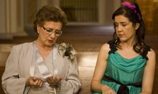
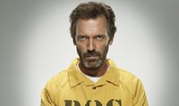
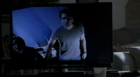
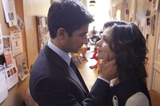
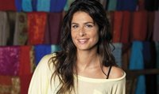
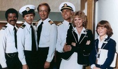
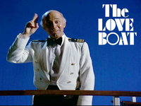
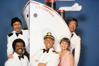
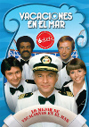

Un pequeño homenaje a la ficción de TVE
Wed, 15 Feb 2012 11:00:00 GMT
Hace un par de semanas saltó la liebre. Como ya os comentamos desde ¡Vaya Tele!, algunas de las series de TVE se encuentran en la cuerda floja y, por una vez, no es por sus cifras de audiencia, sino debido a los reajustes en el presupuesto de nuestra tele pública. La crisis económica ha puesto en peligro el modo de vida de muchas personas y, por supuesto, a pesar de que algunos creen que es un universo en el que se vive en la opulencia, el mundo de la televisión no ha quedado al margen de estos problemas.
Para ser exactos, ‘Águila roja’, ‘Cuéntame’ y ‘Amar en tiempos revueltos’ están en peligro. De momento, parece ser que los nuevos capítulos de las dos grandes bazas del prime time volverán en 2013, pero nadie sabe muy bien cómo ni qué sucedará después. Por otro lado, uno de los estrenos más esperados de la temporada: ‘Isabel, mi reina’, ha visto cómo desaparecían todas las publicidades que hacían referencia a ella, como si los capítulos ya grabados se hubieran evaporado, de la noche a la mañana. Y algo parecido sucede con ‘Gran Reserva‘, se esperaba su tercera temporada para estas fechas y ahora nadie puede decir cuando aterrizará en la pequeña pantalla.
He de decir que soy seguidora de la ficción nacional. Me gusta que a las series españolas les vaya bien. Me gusta también la apuesta que hizo TVE por la ficción hace unos años. Creo que tiene mucho mérito cómo se lanzó a por ciertos contenidos, cómo se arriesgó y cómo consiguió acertar. Ya sé que las circunstancias económicas no están para sentimentalismos pero me va a dar mucha pena si se pierde todo eso. Creo que TVE ha hecho cosas muy buenas y, por eso, también creo que su ficción se merece un pequeño homenaje.
La llegada de Diagonal TV
En 2005 llegó a la sobremesa de nuestras televisiones una telenovela nueva. Muchos espectadores ni siquiera dedicaban un pestañeo a este tipo de formato, la palabra “telenovela” tiene ciertas connotaciones negativas que todos conocemos. Pero ‘Amar en tiempos revueltos‘ no encajaba en ese perfil. Era una ficción hecha con seriedad, cariño y profesionalidad. Su productora, Diagonal TV, se había convertido en embajadora de un tipo de series que apostaban por el costumbrismo y la cercanía pero no el maniqueísmo ni los tópicos. El respeto con el que se trataban a los personajes y a las tramas caló hondo en los espectadores, que convirtieron a esta ficción de época en líder de audiencia y hasta ahora.

En Cataluña, Diagonal TV es una productora emblema. En el resto del territorio español, poco a poco, se ha ido conociendo su buen hacer. En 2008, la productora tuvo la oportunidad de hacer una serie para el prime time. ‘La Señora‘ se convirtió en poco tiempo en líder de la noche de los lunes. Se trataba de una historia ambientada en los años 20 del siglo XX español. Apostaba por un personaje femenino potente y tramas amorosas imbricadas con cuestiones políticas y empresariales. Un “dramón” como muchas veces habíamos deseado los espectadores españoles.
La estela de Diagonal TV ha fructificado en otras cadenas y también en TVE. Pero puede que pronto vea cortadas sus alas. La segunda temporada del spin-off de ‘La Señora’, ‘14 de abril. La República‘, fue presentada en agosto de 2011, pero todavía no tiene fecha de estreno. Por lo que toca a ‘Isabel, mi reina’ muchos somos los que sentimos verdadera curiosidad por ver cómo los guionistas de Diagonal TV habrán recreado esa época histórica tan convulsa, aunque, de momento, parece que tendremos que seguir esperando.
Thrillers con nuevos aires
TVE se ha atrevido con casi todos los géneros y ha apostado firmemente también por series policíacas, de investigación o con misterios que resolver. ‘Desaparecida‘ narraba la historia de Patricia Marcos, una chica que no volvía a su casa después de salir una noche de fiesta. Este argumento que seguramente hemos oído cientos de veces es el de una serie que empezó como si tal cosa y se convirtió en un auténtico bombazo entre 2007 y 2008, por su indiscutible calidad técnica y artística.
El otro éxito del suspense de TVE se llama ‘Los misterios de Laura‘. Nadie confiaba en la serie protagonizada por María Pujalte y, de hecho, el rodaje de su primera temporada se vio reducido. Pero, ahora, prepara su tercera temporada (se supone). El particular modo de enfocar las investigaciones de la inspectora Laura Lebrel se llevó de calle los corazones de los espectadores, que le encontraron gusto a esta mezcla de intriga, cotidianidad y humor.

Otras series como ‘UCO’ o ‘Guante Blanco’ no contaron con el favor del público. El spin-off de ‘Desaparecida’ acabó sus días en Internet, donde se programó para que el romance con sus espectadores no quedara interrupto. Por su parte, la serie de ladrones de alto standing tan sólo disfrutó de tres emisiones en antena. Pero el hecho de que se apostase por estas ficciones, nuevas y con características diferentes, creo que las convierte en merecedoras de mención.
Sagas familiares
Las grandes sagas familiares siempre han protagonizado grandes momentos en la ficción, y en TVE tuvimos algunas de ellas. ‘Herederos‘ nos hablaba de los Orozco, una familia vinculada al mundo del toro. Fue una producción de Cuarzo y, a pesar de todas las pegas que se le pueda poner, encontró un hueco entre la audiencia. El papel de Concha Velasco recordaba, en muchos puntos, a la mítica Angela Channing, y todos sabemos cuánto nos gusta un buen malo.
‘Gran Reserva‘ está a la espera del comienzo de su tercera temporada. Su productora es Bambú y, curiosamente, podríamos decir que enlaza también con ‘Falcon Crest’ por el protagonismo que tiene la cultura del vino. Ambientada en La Rioja, las dos familias protagonistas viven con pasión (demasiada) su amor a la viticultura. Hay traiciones, hay secretos inconfesables… Muchos giros que ponen al espectador en un ¡ay! permanente. Su factura técnica y su reparto son otros de los valores de la serie.
Humor y vanguardia
Antes dijimos que que TVE se había atrevido con muchos géneros y las series que vienen a continuación corroboran esta tesis. Fueron los primeros en traernos a una televisión pública a los muchachos manchegos, a Joaquín Reyes y compañía. Y yo todavía se lo agradezco. ‘Muchachada Nui‘ fue el nombre escogido para sustituir a su reconocida ‘La Hora Chanante’. No sabría cómo definir este programa, no sería objetiva y escribir cinco párrafos de elogios os aburriría bastante. Humor surrealista, personal y que ha creado escuela.
‘Ciudad K‘ fue un experimento que no tuvo tanta suerte. Estrenada en 2010 era una serie en la que se sucedían sketches humorísticos con cierta pretensiones culturales. Todos sabían que iba dirigido a un público minoritario y que, tal vez, lo insólito de su propuesta (una ciudad en la que todos los habitantes tienen un coeficiente intelectual elevado) no le augurase un futuro muy prometedor. En su favor, diré que tuvo el mérito de probar algo nuevo y que se supone que esa es una de las tareas de una televisión pública.
Otra serie que pudimos ver en La 2 fue ‘Plutón BRB Nero‘. Una propuesta personal de Alex de la Iglesia que combinaba la ciencia ficción con humor irreverente. La premisa de la que partía prometía mucho: una nave que debe buscar un planeta habitable para salvar a la humanidad en el año 2530. Contó también con un buen despliegue de medios: se grabó en formato cine, por ejemplo. A pesar de la disparidad en las críticas, comprobar que una serie española iba a apostar por un proyecto tan alejado de los estándares que vemos en televisión conllevó ciertas gratificaciones.
El toque social
‘Pelotas‘ fue una serie de El Terrat, programada en La 1 en 2009 y 2010. Nos contaba las vicisitudes de un grupo de amigos que jugaban juntos en el equipo de fútbol de su barrrio: el Unión Fútbol Club. La serie tenía la marca personal (y una marca de autor en nuestra ficción televisiva ya es para destacar) de Corbacho y Juan Cruz, y, más exactamente, de su película ‘Tapas’. Las tramas se centraban en las pequeñas miserias, alegrías y derrotas de personas corrientes, alejándose así de estereotipos de triunfadores y gente con alto poder adquisitivo que protagonizan tantas ficciones.
‘Mujeres‘ fue una pequeña joyita que recorrió un camino duro hasta llegar a nosotros. Dirigida por Dunia Ayuso y Félix Sabroso se estrenó en 2006, casi un año después de haber concluido su grabación. Sólo constó de una temporada de trece capítulos pero eso le bastó para ganarse el aplauso de la crítica. No gozó de las mejores condiciones para ser visionada, y puede que alguno de vosotros no la conozca. Si es así, os la recomiendo. Creo que su combinación de historias realistas y humor, y esas tres generaciones de mujeres merecen una oportunidad.
Las miniseries
TVE también ha apostado por las tv-movies durante estos años. Bueno, quizá alguien se moleste por el término porque muchos las han llamado miniseries, pero eran películas pensadas para televisión, en dos capítulos y no siempre las etiquetas tienen que determinar la calidad de un producto.
De hecho, TVE, de alguna forma, ha revitalizado y dignificado el género. Una de las más recordadas es ‘23 F, el día más difícil del Rey’. Fue un gran éxito y no puedo dejar de destacar el complicado ejercicio de guion que supuso, con una historia en la que las conversaciones telefónicas tenían mucho protagonismo pero que no por ello resultó pesada o aburrida. Otros títulos que han tocado temas de nuestra historia reciente son ‘Tarancón, el quinto mandamiento’, ‘El ángel de Budapest’ o ‘Clara Campoamor. La mujer olvidada’. Tampoco podemos olvidar los especiales de ‘Amar en Tiempos Revueltos’ que han contado spin-offs de los personajes más carismáticos.
Y me dejo muchas, ‘Abuela de verano’, ‘Plaza de España’ e incluso ‘Las chicas de oro’… Tampoco hablo de las dos grandes, las dos series que han puesto el prime time de La 1 en cotas poco accesibles para sus perseguidores: ‘Águila Roja‘ y ‘Cuéntame‘ han dado muchas alegrías no sólo a TVE, sino también a sus seguidores. Y yo espero, de verdad, que lo puedan seguir haciendo.
En ¡Vaya Tele! | TVE suspende la emisión de ‘Águila Roja’ y ‘Cuéntame cómo pasó’ hasta 2013

Un mes probando Youzee, "Desde mi sofá"
Tue, 14 Feb 2012 18:00:08 GMT

No suelo ser yo de ésos que se disculpa cuando ha de escribir algo pero en esta ocasión veo necesaria una pequeña aclaración antes de ahondar en el tema que nos aborda.
He de decir que fui de los que me acerqué hasta la –hollywoodiense, por otro lado- presentación de Youzee y de los que estuvo varios días comentando con el sector la revolución que iba a suponer su lanzamiento y previsible consolidación posterior. Adelantándose a Netflix, con un diseño y una interfaz muy cuidados, un precio competitivo y con un catálogo que, según nos contaron aquel día, iba a aumentar día a día. Todo pintaba bien.
Ya desde ¡Vaya Tele! y Genbeta nos hicimos eco del lanzamiento de su beta (privada, en un principio y con invitación ahora, en ambos casos gratuita, lo cual se agradece). Y yo, que recientemente me he parado a reflexionar en voz alta sobre los pros y los contras del pago por el Video on Demand, que me encuentro analizando (desde un punto de vista absolutamente personal, eso sí) las principales plataformas de VoD que operan en España (así lo hice recientemente con Filmin) y que, incluso, creía firmemente que Youzee había empezado anotando el primer tanto a Netflix por estas tierras en este largo partido por la victoria en el vídeo bajo demanda, a día de hoy, cuando quiero ver una película, no accedo a Youzee. ¿Y por qué? La respuesta, para mí, es sencilla: por el contenido.
De Youzee está escrito casi todo en muy poco tiempo. Me encantó su labor de comunicación y marketing previa al lanzamiento. Miles de seguidores en sus perfiles sociales y cierto revuelo en el mundillo sin contar casi nada. Éramos los prescriptores de su marca sin haber visto ni un título. Pero estamos ya en otro punto. En el de mostrar al mundo tus encantos. Y, en ese sentido y personalmente, como todo lo que escribo, me siento un poco desilusionado.
Que sí, que tal vez sea yo… Pero es entrar en la sección de películas y ver entre las ocho primeras `El acorazado Potemkim´ (film de 1925), `Pygmalion´ (1938), `Una jornada particular´ (1977) y `Papillon´ (1973) y pensar “ésta no es vuestra liga”. Estupendas películas y sé que es porque están ordenadas por valoraciones de los usuarios pero para ver eso no pago una suscripción a Youzee. `El Bar Coyote´ fue una de las otrora destacadas. Tal vez sea del tipo de películas del público al que va Youzee pero… ¡es una película de hace 12 años! El foco no puede estar ahí.
¿Qué ocurrirá con Youzee cuando Netflix desembarque en España? El trabajo duro, el de “picar piedra” concienciando a la sociedad, evangelizando acerca de que lo que mola el Video on Demand ya lo habrá hecho Youzee. Entonces llegarán los yankees con equis millones de euros para marketing y plantarán un anuncio diario en, por ejemplo, `El Hormiguero´, otro a página completa y en color en el dominical de El País varias semanas, harán un par de cuñas pegadizas para radio y se comerán a las demás. Bueno… a las que luchan por sus mismos intereses. Filmin, por ejemplo, no lucha por ese target. Ha buscado un nicho fiel. Que no da para grandes alardes ahora, vale. Ya lo dará. Un proyecto de éstos es a medio-largo plazo. Pero nadie compite con ellos. El caso de Youzee es radicalmente distinto. Compite con los gigantes. Y ésos vienen con un catálogo tremendo.
Ea, pero que no parezca que soy un anti-Youzee. Todo lo contrario. Hablé maravillas de la plataforma los primeros días-semanas. Un look mezcla de Apple y Google, intuitivo, directo al contenido, ése que debe ser el rey… Pero de lo que aquí aún falta. Tal vez salieron antes de tiempo. O no han podido cerrar acuerdos que les dotaran de mayor catálogo con mayor celeridad.
Que conste que para mí Youzee sigue siendo la plataforma con mayor potencial de todas las que existen actualmente en España. Pero, ojo, he visto a muchos deportistas talentosos que han acabado jugando en ligas menores. Y ése no es el core de Youzee. Y sí el de Filmin. Y no estoy casado con ninguna de las dos, por supuesto.
Escribo estas líneas con el mejor de los propósitos. Seguramente yo estaré suscrito a Youzee. Pero han de darnos algo más. Youzee, esperamos vuestro boom. Acabáis de empezar y es un proyecto en el que se nota que hay ilusión y trabajo bien hecho. Conozco personalmente, además, a varios de los que por ahí andan metidos y son muy buenos. Además, lo que hacen es pionero y, también por eso, merecen nuestro respeto. Suerte. Pero, repito, dadnos algo más. Lo agradeceremos. Y así nos quedaremos con vosotros cuando Netflix venga arrasando.
En Vaya Tele | La “televisión social” como nuevo modelo de negocio. ¿Promoción o monetización?
En Vaya Tele | Desde mi sofá
¿A qué espera Antena 3 para sacar sus series?
Tue, 14 Feb 2012 14:00:00 GMT
Hay algo que me tiene nerviosito perdido esta temporada televisiva y es lo mucho que están tardando en lanzar sus productos potentes a emisión las cadenas españolas. Llevamos desde antes de verano hablando de muchas ficciones (también programas) que bien podrían haberse comenzado a emitir en otoño y a que, a día de hoy, siguen sin aparecer.
A diferencia de otros años, no hubo demasiados estrenos entre septiembre y octubre, y menos aún ha habido después de navidades, los dos periodos estacionales en que se suelen comenzar a emitir nuevas temporadas o series de estreno. Mientras que Telecinco no tiene demasiados proyectos en fase avanzada a la espera, La 1 sí cuenta con varios (pero parecen paralizados por los problemas económicos del Ente), pero sobre todo Antena 3 tiene bastantes.
Las ficciones de estreno
Las dos grandes series nuevas aún sin ver la luz son ‘El tiempo entre costuras’ y ‘Luna: el misterio de Calenda’. La primera es la adaptación del best seller de María Dueñas y este enero se concluyó el rodaje de la primera temporada completa; mientras que la segunda es la ficción de Globomedia sobre hombres lobo que protagonizará Belén Rueda y que también lleva bastante tiempo grabándose.
A estas dos series regulares hay que añadir ‘El Corazón del Océano’, una miniserie de seis capítulos con Hugo Silva como cabeza de cartel, y la tv movie ‘La Tormenta’, que se grabó en el verano de 2010 y fue preestrenada en cines en noviembre. Otro proyecto de nueva ficción es ‘Cuentos del Siglo XXI’, pero no parece encontrarse en un estado tan avanzado como los anteriores.
Nuevas temporadas de éxitos consolidados
Pero además de estos estrenos, Antena 3 tiene pendiente de sacar nuevas temporadas de varias de sus series. La que más tiempo lleva esperando su turno es ‘Los Protegidos’, que parecía que se emitiría en otoño pero se ha ido dejando y nadie sabe cuándo saldrá. Lo que sí sabemos es que la tercera temporada de la serie está ya rodada y llevará el subtítulo de “El Origen”. En esta promo lanzada el 31 de enero dicen que la espera ha acabado, ¿tenemos que creérnoslo?
Otra a la que le toca volver es a ‘Hispania, la leyenda’, faltando tres episodios para poner fin a la historia de Viriato y dar paso a su spin-off, ‘Imperium’, que probablemente veamos la próxima temporada. También tres episodios son los que le faltan por emitir a ‘El Barco’, correspondientes a la segunda temporada que está teóricamente de parón. Pero no me extrañaría que la cadena uniese esos tres capítulos a la próxima temporada, haciendo una chapuza descomunal.
¿Creíais que eso era todo? Pues no, no nos olvidemos que ‘Gran Hotel’ cerró con sólo 9 episodios su primera temporada y que ya se está grabando una segunda con más capítulos, y cuyo rodaje se alargará hasta verano. ¿Significa eso que la dejarán sin emitir hasta septiembre? En vista de todo lo que tienen por emitir yo diría que sí.
Y dejando de lado la ficción, tampoco hay que olvidar que Antena 3 tiene pendiente la emisión de ‘Curso del 73’ (grabada bastante antes del verano) y el proyecto del talent show ‘El Número 1’ que tanto está promocionando.
¿Miedo a la competencia?
Entonces, ¿si tienen tanto material pendiente de emisión por qué no lo sacan? Supongo que la respuesta es miedo. Miedo a competir con productos fuertes de la competencia y que se les hundan sus apuestas. Pero vale, una cosa es ir con cuidado y lanzar los productos mimados en noches de competencia débil, y otra muy distinta es desperdiciar días y días con películas que no te llegan al 10% de share mientras tienes un cajón repleto de series de éxito y grandes apuestas cogiendo polvo. A fin de cuentas, no va a llegar un día en que las otras cadenas se replieguen y pongan la carta de ajuste.
Estamos ya a mitad de febrero, lo que significa que las cadenas no tienen demasiado margen de actuación y si quieren emitir temporadas completas de 13 episodios antes de que llegue el verano hay que ir sacándolas ya. Como en Antena 3 no se den prisa, no les va a caber todo en las siete noches de la semana y van a tener que guardarse algo para el próximo otoño.
En ¡Vaya Tele! | Las nuevas ficciones nacionales que están en camino: Antena 3
'I Just Want My Pants Back': 'Friends' meets 'Sex and the City'
Tue, 14 Feb 2012 10:03:05 GMT
Sexo, sexo y más sexo. La rueda que mueve el engranaje de la ficción en MTV. Al menos así se deduce de sus dos últimos productos juveniles: ‘Awkward’, la serie teen de la que os hablábamos la semana pasada y ‘I Just Want My Pants Back’, lo último de la norteamericana para la midseason. La nueva comedia, con formato similar a ‘Awkward’ (capítulos de aproximadamente 20 minutos, frescura y socarronería en los diálogos, dramas juveniles en las tramas) llegó a MTV USA el pasado 2 de febrero, con unos datos de audiencia bastante decentes: 1.815.000 espectadores, y un 1.0 de rating en el demográfico de 18 a 49 años.
‘I Just Want My Pants Back’ es la adaptación para televisión de la novela homónima de David J. Rosen (2007). La producción ejecutiva corre a cargo del mismo Rosen. ¿Quién mejor que el creador de esta historia para invertir en ella? MTV debió verle muchas posibilidades como producto para su cadena y encargó doce episodios para esta primera temporada, como suele ser habitual en las cadenas de cable.
Y todo empezó con unos pantalones
Jason (Peter Vack) es un chaval de veintitantos en su etapa de postgraduado que, de momento subsiste como cámara en una agencia de castings, un trabajo que no le apasiona y al que siempre llega tarde. Tal vez sea porque trasnocha demasiado con su amiga Tina (Kim Shaw), con la que mantiene la típica relación de amistad que previsiblemente desembocará en tensión sexual no resuelta con el devenir de la serie. Comparten copas, humo y noches de caza, además de una actividad sexual bastante frenética (por separado).
En una de esas “cacerías”, Jason conoce a Jane. A priori, un ligue de una noche más. Sin embargo, Jason parece algo tocado: pese a su actitud fría y vanal frente al sexo y las relaciones, la chica ha apretado algún tipo de tecla. Pero desaparece dejando sólo un número falso y llevándose sus pantalones cual “trofeo sexual”. Desde ese momento, Jason hará lo posible por recuperar sus vaqueros y, de paso, a la chica. Así que adopta este lema como un mantra ‘I just want my pants back’, mientras retoma su vida sexual con un desfile continuo de excéntricas, a la espera del gran reencuentro con la usurpadora de ropa.
Dos referencias inevitables
Lo que uno se encuentra al ver el piloto de esta nueva serie es una mezcla de viejos conocidos: la ciudad de Nueva York, unos amigos veinteañeros buscándose la vida (‘Friends’) y mucho sexo urbanita (‘Sex and the City’). Lo de los amigos es ya enfermizo, lo reconozco. La pandilla del Central Perk es un pilar de nuestra cultura televisiva y es imposible evitar recordarlos cuando nos encontramos ante una “historia de colegas”. En cuanto a la comparación con Carrie y compañía, la intensa e insistente presencia del sexo en las tramas es un denominador común entre ambas series.
La diferencia es que en ‘I Just Want My Pants Back’, todo ese rollo del romanticismo queda a un lado. Nada de desamores épicos, como el de Carrie y Mr. Big. Jason sólo quiere que le devuelvan sus pantalones. Al menos de momento, porque la historia de Jason y Jane es sólo el punto de partida de la serie y todo apunta a que esa relación ha de evolucionar. O alomejor Jason acaba sufriendo el “síndrome Ted Mosby” y Jane acaba siendo lo último que nos importe, mientras nos va contando la historia de cómo recuperó sus pantalones.
Sus puntos a favor
A pesar de las comparaciones, ‘I Just Want My Pants Back’ navega por otros mares: se trata de veinteañeros experimentando, abrazando el hedonismo como única filosofía de vida, mientras se enfrentan a la realidad post-universidad. Lo cierto es que ha habido cierta unanimidad entre la crítica en USA al calificarles de nuevos hipsters. La verdad, teniendo tan reciente la lectura de En el camino, de Kerouac, me parece una osadía la comparación. Si me apuras, hipsters 2.0. En cualquier caso, la serie ha tenido una buena acogida. Tanto es así que Metacritic le otorga un nada desdeñable 68 sobre 100, basándose en las críticas aparecidas en prensa.
Lo cierto es que la serie tiene cierto magnetismo, que debe sobre todo a personajes como Tina, arrasadora y carismática, egoísta y caprichosa, pero sensible en el fondo. Para aportar algo de estabilidad y “normalidad”, nada mejor que una pareja multiétnica (ella blanca y controladora, él negro y sometido, ¿os recuerdan a alquien?) y esas típicas tramas que dan de si una relación “madura”. Completa el reparto un secundario necesario, aunque demasiado caricaturizado: el personaje exótico, Sunkrish Bala, que interpreta al tendero pakistaní del barrio. Curiosamente, también lo pudimos ver en ‘Awkward’ como Mr. Mishra.
En ¡Vaya Tele! | “La idea es que haya 2ª temporada de ‘Alaska y Mario’, pero tenemos que sentarnos con ellos”, entrevista a Laura Abril
Cuatro estrena el jueves la última temporada de 'House'
Mon, 13 Feb 2012 21:47:43 GMT

Sorpresa la que nos tenía reservada Cuatro para esta semana y nosotros sin saberlo. La cadena acaba de anunciar que estrenará el jueves los nuevos capítulos de ‘House’, los que corresponden a la octava temporada o, lo que es lo mismo, los que pondrán fin a la historia del doctor más irreverente de la televisión. Si hace unos días sabíamos que ‘House‘ se despediría esta temporada para siempre, ahora es Cuatro la que utiliza la noticia para anunciar el estreno de la nueva temporada, algo que puede que enganche a algún que otro espectador.
Soy de los que piensan que ‘House’ necesitaba decir adiós. Las tramas que nos estaban ofreciendo no aportaban nada nuevo y solo servía para estirar la personalidad del doctor lo máximo posible. Ahora solo queda que la segunda parte de la temporada (la primera sigue siendo más de lo mismo) esté a la altura de lo que ha supuesto la serie, y le de un buen final a House. Nos guste o no, me atrevería a decir que el final de House será de esos polémicos, aunque a día de hoy eso todavía sea adelantarme demasiado.
Hay que reconocer la buena oportunidad que ha encontrado Cuatro para estrenar la octava temporada de ‘House’. Se enfrentará a ‘Gran Hermano’ y al final de temporada de ‘Sherlock’, aunque lo mejor es que no hay ninguna serie de La 1 a la vista, por lo que puede hacerse con una cuota de share importante, al menos en sus primeros capítulos. Se ha acabado la espera para los seguidores de ‘House’, que a partir del jueves a las 22:30 volverán a tener una cita con su médico favorito.
En ¡Vaya tele! | ‘House’ finalizará esta temporada
Cinco capítulos de 'Fringe' que le deben mucho a 'Expediente X'
Mon, 13 Feb 2012 10:47:52 GMT
Fotograma del capítulo 2×01 de Fringe. ¿Reconoceis a alguien?
La foto de arriba es el claro homenaje que ‘Fringe‘ le hizo a una de sus mayores influencias, ‘Expediente X‘, en ‘A new day in the old town‘, el primer capítulo de su segunda temporada. En él no sólo veíamos en acción a los cambiaformas, esa especie de supersoldados que deben tanto a los replicantes de ‘Blade Runner‘ (y a los cylones de ‘Battlestar Galactica‘) y al cazador de recompensas alienígena de la serie de Chris Carter, sino que también nos encontrábamos con que Broyles iba a un comité del Senado (creo) en el que le mencionaban “la antigua denominación X” y con que en la televisión del apartamento de una de las víctimas se veía a Mulder y Scully (premio a quien sepa a qué pertenece ese fotograma. Yo creo que es de un capítulo de la sexta temporada, ‘Dreamland‘).
Aunque al principio intentaron descartar esas influencias, finalmente han acabado abrazando la sombra que esos dos agentes del FBI arrojan sobre las peripecias de Olivia Dunham, Walter y Peter Bishop y compañía (además de no olvidarse de la influencia de ‘Alias‘, muy clara en casi todo lo que le pasa a Olivia sobre todo en la tercera temporada), y algunos de sus mejores capítulos autoconclusivos son los que tienen el aroma de los monstruos de la semana más celebrados de ‘Expediente X’. Esta serie no iba sólo sobre marcianos; de hecho, bastantes de los casos que investigaron Mulder y Scully podrían haber salido de las mentes de Walter y William Bell. Estos son cinco episodios de ‘Fringe’ en los que el dejà vú a la creación de Chris Carter es más claro.
2×02 ‘Night of desirable objects’
El monstruo de este episodio, en el que Olivia iba un poco a lo doctor House con su bastón, recordaba mucho a Eugene Tooms, aquel mutante capaz de introducirse por cualquier hueco, por pequeño que fuera, y que necesitaba hígados humanos para poder sobrevivir. En ‘Fringe’, el mutante vive bajo tierra y va matando a todo el que se acerca a una granja que parecía sacada de ‘Home‘ y su familia de freaks. Fue el momento en el que Olivia y Peter más recordaron a Mulder y Scully hasta que llegó el siguiente episodio de la lista.
2×12 ‘Johari window’
Los monstruos que sólo querían que los dejaran vivir en paz protagonizaron varias historias de ‘Expediente X’ (incluyendo ‘Bad blood‘ y sus divertidos vampiros), y esta visita de la División Fringe a ese Edina de extraños habitantes recordaba inevitablemente a ellos. Además, planos como el de arriba, en medio de esos bosques y con esa iluminación, llevaban a la misma asociación de modo ineludible. Curiosamente, este episodio de ‘Fringe’ fue precedido, el día de su emisión, por uno de ‘Bones‘ que homenajeaba directamente ‘Expediente X’, ‘The X in the file‘.
3×03 ‘The Plateau’
Un tema que ambas series comparten es el de los experimentos de todo tipo que salen mal, y cómo afectan a los sujetos que se sometieron a ellos. En este episodio (al que recuerda mucho el piloto de ‘Touch‘, por cierto), dicho sujeto es un hombre que puede calcular las probabilidades de que algo suceda y aprovecharlas en su beneficio. ‘Expediente X’ siempre buscaba dar un lado humano a sus “monstruos”, y ‘Fringe’ sigue esa línea con la relación de este hombre con su hermana.
4×03 ‘Alone in the world’
Hongos mutantes hubo, creo, un par en ‘Expediente X’, y jóvenes solitarios que encontraban solaz en algún hecho sobrenatural también hubo unos cuantos. El niño que centraba este episodio podría haberse hecho amigo de Mulder sin problema, porque él solía siempre comprender bien a esos solitarios que sentían que no tenían a nadie más en el mundo. En este capítulo, el dejà vú era más una cuestión del tono que presidía todo lo relacionado justo con el niño.
4×12 ‘Welcome to Westfield’
El último episodio emitido hasta ahora de ‘Fringe’ es el principal impulsor de esta lista. No sólo homenajea hasta los códigos de las historias de zombies y postapocalípticas en general en ese pueblo desierto, sino que empieza con lo que parece una abducción extraterrestre (esos coches que se apagan de repente) y luego se pasa buena parte del metraje recordando a los pueblos víctimas de experimentos gubernamentales que eran uno de los clásicos de ‘Expediente X’. Eso sí, este capítulo destaca por todo lo que le pasa a Olivia, pero de eso ya hablaremos en otro momento.
Sólo hemos citado cinco episodios, pero hay muchos más momentos en los que la sombra de Mulder y Scully se nota en ‘Fringe’, desde aquella especie de ‘Videodrome‘ en ‘The No-Brainer‘, de la primera temporada, a los parásitos mutantes de ‘Snakehead‘, de la segunda, a esa niña un poco a lo Clyde Bruckman de ‘Forced perspective‘, de esta cuarta temporada. ¿Se os ocurren algunos más?
Fotos | Fandomania, Fringe Bloggers y Spoiler TV
En ¡Vaya Tele! | ‘Fringe’: ¿Dónde están Mulder y Scully?, Los 10 mejores “monstruos de la semana” de ‘Expediente X’
La importancia de un buen jurado en los talent shows
Mon, 13 Feb 2012 08:00:00 GMT
De un tiempo a esta parte estamos viendo cómo el género del talent show ha resurgido con fuerza, no sólo en nuestro país sino también en el extranjero, como en Estados Unidos, Reino Unido o Australia. Y parece ser que todas las productoras y cadenas son ya conscientes de que el jurado es un elemento esencial para que estos programas funcionen.
Cada vez más, los concursantes, quienes deberían ser los auténticos protagonistas de un concurso de talento, van quedando en segundo plano mientras que los integrantes del jurado ganan peso y minutos de cámara. Lo vimos hace tiempo con Risto en ‘Operación Triunfo‘, pero últimamente se ha confirmado y hasta convertirse en un axioma del género. Porque a fin de cuentas los concursantes vienen y van, y pueden darte el éxito una temporada y hundirte en la siguiente, por lo que los jueces cumplen el necesario papel de nexo entre cada edición del talent show. El público necesita dónde agarrarse.
Recientemente en nuestro país hemos visto dos ejemplos claros de la importancia del jurado: ‘Tu cara me suena’ y ‘Tú sí que vales‘. En el programa de Antena 3, aunque el jurado hizo mucho para conseguir el éxito del programa, es cierto que el grupo de concursantes famosos sí tuvo bastante peso. En cambio en el programa de Telecinco, lo verdaderamente importante son los jueces que cada semana valoran a propuestas poco novedosas entre sí (cantantes, acróbatas, grupos de flamenco…).
Nadie vería ‘Tú sí que vales’ sólo por las actuaciones, ya que su verdadera esencia está en ver cómo critica Risto, qué piensa la bondadosa Merche o qué chorrada se le ocurre a Corbacho. De hecho, el jurado del programa ha ido cambiando a lo largo de las últimas ediciones, y son estos los cambios que resultan relevantes para el formato, más que las diferencia de nivel entre los concursantes.
Guerra de fichajes entre ‘El número 1’ y ‘La Voz’
Siendo conscientes de la importancia que están teniendo los jueces en estos programas, las cadenas se han lanzado a una guerra de nombres y fichajes con los que dotar de empaque a sus próximas propuestas del género. A Antena 3 llegará ‘El número 1’, un programa producido por Gestmusic del que apenas se conoce cómo funcionará (más allá de que habrá cantantes y jueces no sabemos nada de su mecánica) y que están ya ultimando para su estreno.
La cadena ha tirado la casa por la ventana y ha fichado a cinco nombres como jurado que representan el prestigio o la fama, o ambas cosas juntas. Ana Torroja (rostro del grupo más importante de la historia del pop de nuestro país), Miguel Bosé y Sergio Dalma son tres estrellas asentadas que participarán en el programa junto a dos más jóvenes pero consolidados, Natalia Jiménez (ex vocalista de La Quinta Estación) y David Bustamante. Casi nada.
Por su parte, Telecinco anunció la producción del talent show ‘La Voz’, adaptación del formato holandés ‘The Voice of Holland’ que ha sido toda una revolución este año en muchos países, empezando por Estados Unidos donde la NBC le dio el honor de emitir su nueva temporada tras la SuperBowl. En Mediaset tienen un formato consolidado internacionalmente, pero desgraciadamente su producción ha sido más lenta y anuncian que lo postpondrán hasta después del verano, cuando Antena 3 ya haya emitido su programa. No obstante, ellos también han anunciado a sus potentes jueces: David Bisbal, Melendi, Rosario Flores y Malú. Un jurado a primera vista bastante menos atractivo y con un gran fallo, son todos de un estilo similar (pop aflamencado) cuando lo interesante del formato es la variedad.
Y fuera de España…
Si estos nombres os han parecido llamativos, esperad a escuchar los que barajan en formatos similares en otros países. El talent show más conocido en todo el mundo es, desde hace varios años, ‘American Idol‘ donde se hizo archiconocido como juez malvado Simon Cowell, quien después participaría en otros programas gracias a la fama que éste le dio. También en han sido muy sonadas las participaciones en ‘American Idol’ de Paula Abdul, Ellen DeGeneres y más recientemente Steven Tyler (Aerosmith) y Jennifer López, quien ha revolucionado el programa.
En Reino Unido, en cambio, ‘Pop Idol’ (versión británica del programa anterior) no cuajó mucho y siempre ha gustado más ‘The X Factor’. Por la mesa de jueces del programa inglés han pasado gente como Gary Barlow (Take That), Kelly Rowland, Sharon Osbourne, Dannii Minogue (hermanísima de Kylie) o Cheryl Cole (a quien luego ficharon para ‘The X Factor USA’) o el propio Simon Cowell.
La versión estadounidense del programa, además de tener a Cowell y Cole, fichó a Paula Abdul y sorprendió con Nicole Scherzinger, la ex líder de The Pussycat Dolls. En Australia ‘The X Factor’ ha presentado como jueces a gente como Natalie Imbruglia, Ronan Keating, Dannii Minogue (que repite de UK) o las ex Spice Girls Emma Bunton y Mel B.
El jurado de ‘The Voice’ en EE.UU.
Por último echemos un ojo al abanico de jueces que ‘The Voice’ ha seleccionado por el mundo. En Estados Unidos, Christina Aguilera y Adam Levine (Maroon 5) se han llevado todas las miradas, pero compartían sitio con Cee Lo Green y Blake Shelton. En Australia tienen un buen grupo con Seal, Delta Goodrem, Keith Urban y Joel Madden (vocalista de la banda pop-punk Good Charlotte), mientras que Reino Unido ya tiene cerrado un jurado de infarto para su primera edición: Tom Jones, Will.i.am (el que parte el bacalao en The Black Eyed Peas), Jessie J (revelación musical del año pasado) y el cantante de The Script, Danny O’Donoghue.
Como véis, si en España las cadenas se están tomando en serio la elección de los jurados en los programas de búsqueda de talento, fuera de nuestras fronteras lo llevan más allá. Se pone en evidencia que en estos programas lo que prevalece es el espectáculo, y que nadie está dispuesto a sentarse a esperar que lo den los concursantes. Para eso están los jueces. Ellos son quien tienen que impactar a la prensa y los que tienen que atraer al público para que sintonice su canal. Los habrá buenos y malos, y entre unos y otros servirán la polémica en pantalla. Y el talento, ya llegará…
En ¡Vaya Tele! | El resurgir de los talent shows
Edición USA: la Super Bowl, 'Fringe' sigue bajando, el éxito de NBC y más
Sun, 12 Feb 2012 14:34:20 GMT
Se acaba una semana de bajas temperaturas, nevadas y aguas congelados que seguramente ha tenido a más de uno recluido en casa debido a enfermedades varias (yo el primero). Al otro lado del charco no creáis que están mucho mejor, las tormentas de nieve están a la orden del día y los niños pasan más días en casa que en el colegio por culpa de ellas. Pese a este frío, hoy os traemos nuestra tercera entrega de Edición USA, donde os contamos lo ocurrido más destacable en el país de la mantequilla de cacahuete.
Esta semana se ha caracterizado por dos cosas: la Super Bowl y los sweeps. Gracias a la primera se ha estado hablando de audiencias unos cuantos días, y gracias a los segundos, comenzamos a ver episodios especiales de series que sólo buscan atraer nuevos espectadores para quedar bien ante los anunciantes. También tenemos éxitos de la NBC y grandes batallas en audiencias. Atentos que comenzamos:
La Super Bowl arrasa en números

Un evento de la magnitud de la Super Bowl siempre genera mucha expectación alrededor de ella, sobre todo televisivamente. La de este año, edición XLVI, ha batido unos cuantos récords. Para empezar, ha sido la que ha reunido a más gente delante del televisor, consiguiendo que la vieran ni más ni menos que 111.3 millones de personas (que se dice pronto), convirtiéndose en el evento con más personas pendientes de la televisión de la historia de Estados Unidos.
A este récord hay que sumarle el del descanso (un espectáculo inmenso que tuvo este año como protagonista a Madonna), el cual fue el más visto de toda la historia, reuniendo a 114 millones de espectadores. Curiosamente, estos datos tan impresionantes no le valieron para ser la emisión más vista de la historia (como muchos preveían), ya que el share que consiguió la emisión fue de 47.0, un dato que queda bastante lejos del 49.1 que consiguió la Super Bowl XVI.
La NBC acierta con su lunes musical
Parece que febrero le puede traer algunas alegrías a la NBC. A la emisión de la Super Bowl (que seguro que le trajo buenos ingresos) se le añade el éxito de la programación de los lunes. La cadena del pavo real decidió que el primer día de la semana era el ideal para hacerlo temático, para dedicarlo a la música. Y así lo ha hecho estrenando este lunes ‘The Voice‘ y la esperada ‘Smash‘.

Al reality de Christina Aguilera y compañía le favoreció haberse emitido también tras la Super Bowl del domingo (consiguió un 16.3 en la demo) ganando así algo de popularidad. El reality siguió en buena forma anotando un 5.6 y un 7.3 en sus franjas horarias (dura dos horas el programa) y colocándose primero en la lista de programas más vistos. También fue líder ‘Smash‘, la gran apuesta musical de la NBC parece que va a ir adelante, ya que en pleno prime time anotó un excepcional 3.8 en la demo, reuniendo a más de 11 millones de espectadores disfrutando de su piloto.
‘The Big Bang Theory’ gana a ‘American Idol’
El éxito de ‘The Big Bang Theory‘ no sorprende a nadie. La serie de Chuck Lorre encanta a los americanos y arrasa en audiencias todos los jueves. Lo que no nos podíamos esperar es que una ficción pudiera tumbar a un reality. Habitualmente, los espectadores americanos son más de ver reality, pero esta semana la serie de la CBS ha ganado a ‘American Idol’ en su franja horaria (5.5 en la demo frente a 5.2 del reality), algo que debe haber enchido llenado de orgullo a los directivos de la cadena.
La corriente de la audiencia no sigue al estreno de ‘The River’
‘The River‘ era un estreno esperado por muchos, o eso parecía. Y es que después de ver los datos de audiencia parece que no había mucha gente interesada en ver la nueva ficción de la ABC. La serie, con su premiere de dos horas, consiguió únicamente ser la tercera opción de la noche, siendo superado por series como ‘New Girl’ o ‘Unforgettable’.
¿Le habrá perjudicado un estreno tan largo? ¿O es que quizás la ABC no la ha promocionado lo suficiente? La semana que viene sabremos si este mal dato continúa o sigue bajando, pero se auguran malos tiempos para la serie de la ABC
‘Fringe’ sigue cuesta abajo
Parece que los fans de ‘Fringe‘ no ganamos para disgustos. Si la serie ya tenía malos datos, a ellos podemos sumarle esta semana, en la cual han vuelto a empeorar los de la semana anterior. Lo más complicado de todo es que la serie casi baja de los tres millones, una barrera psicológica que hace tirarse de los pelos a más de uno.
Soy de los que opinan que la FOX no lo está haciendo bien con la serie, ya que poniéndola con un lead-in interesante y en un día de semana conseguiría muchos mejores datos, pero por alguna razón parece que la cadena quiere relegar ahí la serie sin razón aparente. Y de paso, tenernos a los fans con la incertidumbre de si la serie va a cancelarse en algún momento o no.
Y hasta aquí el Edición USA de esta semana. La semana que viene vuelve una serie muy esperada, ‘Cougar Town‘. ¿Qué audiencia conseguirá la vuelta de Courteney Cox? En siete días lo sabremos.
En ¡Vaya Tele! | Edición USA
'The Walking Dead', las cinco escenas más impactantes de la segunda temporada
Sun, 12 Feb 2012 10:22:58 GMT
Por fin ha llegado el día. Hoy, domingo 12 de febrero, vuelve ‘The Walking Dead’ a las pantallas de la AMC para continuar con los seis episodios que restan de segunda temporada. Mañana lunes llegará a España de la mano de FOX, que la emitirá a partir de las 22.20 de la noche. El parón de varias semanas se nos ha hecho eterno a muchos, y sobre todo más teniendo en cuenta el final.
Para celebrar este regreso y también para recordar los principales momentos del primer tramo de temporada, hemos decidido hacer una selección con los cinco momentos más impactantes que hemos visto hasta ahora en esta segunda entrega. Obvia decir que a continuación hay muchos muchos muchos spoilers de lo que se ha emitido hasta el momento, así que si no vas al día no te recomiendo seguir leyendo.
5. El zombie del pozo
Si hay algo que nos ha demostrado ‘The Walking Dead’ en estos dos años es que no tienen miedo ninguno a enseñarnos escenas desagradables, muy frecuentemente protagonizadas por zombies. Si hay que cubrir a los personajes de tripas y demás elementos anatómicos se les cubre, y si hay que destrozar cabezas pues se destrozan. En una de las escenas de esta temporada tampoco tuvieron demasiado problema en meter un zombie gigante en un pozo y después partirlo por la mitad.
4. Zombies creyentes
He de reconocer que, cuando vi esta escena, no supe muy bien qué pensar. ¿De verdad había zombies sentados en una iglesia? ¿Por qué? Que yo recuerde no hemos visto zombies sentados tranquilamente en cualquier otro lugar, sólo vagando y atacando a gente. Entonces, ¿por qué en una iglesia? Esta escena trajo en su día bastante polémica por esto mismo, con algunos fans criticando este hecho y otros explicándolo recurriendo a una posible “memoria vestigial” que aún permanece en los zombies. Que cada uno saque sus propias conclusiones, pero no deja de ser una escena bastante chocante.
3. Daryl ve de cerca la muerte
Daryl ha sido uno de los personajes que más ha evolucionado, convirtiéndose en el favorito de muchos. Durante lo que llevamos de serie hemos visto cómo cambiaba por completo: el malo, egoísta y rebelde ha pasado a ser uno de los que más ayuda al grupo y de los que más se preocuparon por encontrar a Sofía, arriesgando su propia vida por una pista.
En la escena que he elegido le vemos llegar al campamento base completamente deshecho y casi irreconocible, lo que hace que Andrea le confunda con un “caminante” y le dispare, haciendo de paso que todos saltemos en el sofá del susto. A fin de cuentas, si algo nos ha demostrado la serie hasta ahora es que cualquier personaje, excepto quizás el protagonista, podría morir en cualquier momento. Por suerte, Andrea es tan mala identificando objetivos como apuntando.
2. Carl y el ciervo
En un mundo repleto de zombies no hay nada más inofensivo que un ciervo, ¿verdad? Eso pensaba Rick, aunque se olvidaba de la existencia de otros seres humanos. Lo que parecía que iba a ser una escena tierna entre tanta sangre y vísceras terminó de manera trágica para Carl, cerrando con un gran interrogante el primer capítulo de la segunda temporada y condicionando también el desarrollo del resto de episodios que hemos visto hasta la fecha.
1. Sofía en el granero
Como todos habréis supuesto al leer tan sólo el título del post, reservamos la primera posición para el final de esta primera parte de la segunda temporada. Un final que seguramente muchos no nos esperábamos y que cierra el arco argumental de la búsqueda de Sofía de manera intensa y triste. Los responsables de la serie han sabido plasmar en la pequeña pantalla la tensión y el dolor de manera magistral.
En ¡Vaya Tele! | ¿Cómo habría sido la segunda temporada de ‘The Walking Dead’ con Frank Darabont todavía en el equipo?
'Diario de' y otros programas que utilizan la cámara oculta
Sat, 11 Feb 2012 18:26:12 GMT
Esta semana hemos conocido una de esas sentencias que afectan directamente a los contenidos que estamos acostumbrados a ver en televisión. El lunes nos enterábamos que el Tribunal Constitucional declaraba ilegítimo el uso de la cámara oculta en las investigaciones que los periodistas llevan a cabo para demostrar una información, una práctica que muchos programas que se emiten en la actualidad en nuestra parrilla usan o han usado alguna que otra vez en su historia. El Constitucional se pronunciaba ante una cuestión polémica de la que se había discutido mucho anteriormente, y que enfrentaban a aquellos que denostaban su uso frente a los que defendían ese medio como vía para llegar a informar a la población sobre un hecho relevante que estaba ocurriendo.
En los últimos años en nuestra televisión hemos visto muchos ejemplos de cámara oculta. En torno a esta práctica se han llegado a crear programas especiales en los que se mostraba la denuncia de un hecho que los periodistas habían investigado y habían conseguido grabar sin ser descubiertos, para luego montar un debate en el que varios contertulios mostraran su opinión sobre lo ocurrido. También hemos visto esta práctica incluida en algún que otro informativo, que nos ha mostrado la noticia desde dentro para que los espectadores fueran conscientes de lo que ocurre en la realidad. Y, por último, en las últimas temporadas hemos visto cómo se creaban programas que se centraban en el uso de la cámara oculta para denunciar ciertos hechos y que, tras la decisión del Tribunal Constitucional, entran en un punto de inflexión del que no sabemos cómo evolucionarán.
‘Diario de’, ocho años de cámara oculta
Si hay un espacio que se puede ver afectado por la decisión del Constitucional éste es ‘Diario de’. El programa presentado por Mercedes Milá basa la mayor parte de su contenido en las grabaciones que se realizan gracias a la cámara oculta, que permite mostrar a los espectadores lo que se está denunciando en cada programa. Tanta es la dependencia de ‘Diario de’ a la cámara oculta, que uno de los primeros rostros televisivos en valorar la decisión del Tribunal Constitucional ha sido el de Mercedes Milá, que no ha dudado en reflejar su preocupación ante el futuro del programa.
‘Diario de’ es uno de esos programas que se mueve entre la fina línea que separa lo que es necesario emitir de lo que es puro morbo. A veces consigue poner ejemplos muy buenos a todos aquellos detractores del uso de la cámara oculta, ya que se aleja de lo que es simplemente informar para retener al espectador ante la televisión todo lo posible. Quizá para luego defender su uso antes habría sido conveniente tratar la técnica de la mejor manera posible y yo creo que hay ocasiones en las que a ‘Diario de’ se les ha ido de las manos, algo que les ha hecho no estar en la mejor posición actualmente para defender su legitimidad.
‘Equipo de investigación’, los reportajes de Antena 3
Uno de los programas de reportajes más recientes que hay en la televisión, pero que sigue la estela de muchos otros que Antena 3 ya emitió en el pasado. Gloria Serra se pone cada viernes al frente de ‘Equipo de investigación’, un programa que cada semana está centrado en un tema distinto y que también ha recurrido a la cámara oculta en sus reportajes. Quizá en esta ocasión el uso de esta técnica se hace con menos frecuencia que en el programa de Mercedes Milá, pero sus futuras entregas también pueden verse afectadas por la decisión del Tribunal Constitucional.
Informativos, las noticias en cámara oculta
No es la práctica más habitual que encontramos en un informativo, pero alguna que otra vez todos los telediarios (y me atrevería a decir que de todas las cadenas) han incluído una información conseguida a través de la cámara oculta. Normalmente se utilizan para denunciar una práctica ilegal y, si ha sido realizada por un equipo de la cadena, suele ser una parte importante de un reportaje que se incluye en el informativo. La mayoría de ellas pueden ser buenos ejemplos de lo necesario que se vuelve a veces la cámara oculta en el periodismo, aunque precisamente sean los espacios en los que menos añoraremos esta práctica en el futuro.
Magacines, cámara oculta para todo
Quizá porque suelen tener varias secciones durante las horas que dura cada programa, los magacines son los que utilizan la cámara oculta con mayor variedad. Podemos observar su uso durante una investigación que hayan llevado a cabo miembros del programa sobre un asunto interesante en nuestra sociedad. Pero también son numerosos los casos en los que se ha usado esta práctica para pillar al famoso de turno en una situación comprometida o haciendo unas declaraciones que no haría en una entrevista normal. Aquí se encuentra otro de los usos incorrectos que se le ha dado a la cámara oculta en los últimos años, llegando a hacer bastante daño a personas que la usaban para denunciar algo realmente relevante públicamente.
Programas que en la actualidad están en antena, como ‘Espejo público’, ‘La noria’, ‘El programa de Ana Rosa’ o ‘Sálvame’ no han dudado en usar la cámara oculta cuando han conseguido una información con la que creían que podían captar la atención del público, aunque en algunas ocasiones, con criterios dudosos sobre su correcto uso. Parece que estos programas, y los citados anteriormente, tendrán que ingeniárselas ahora para seguir haciendo reportajes sin poder grabar a las personas sin su conocimiento. Espacios como ‘Salvados’, ‘Callejeros’ o ‘Comando actualidad’ pueden servir de guía para el futuro.
En ¡Vaya tele! | ‘Diario de’ se pasa a Cuatro
El musical de las series de la NBC, la imagen de la semana
Sat, 11 Feb 2012 09:31:57 GMT
Aprovechando la inmensa audiencia de la Superbowl y con el propósito de acercar su cadena a la audiencia, la NBC lanzó el pasado domingo una promo musical con todas sus series y caras más reconocidas del prime time. Teniendo como premisa la supuesta fiesta lanzada por Jack Donaghy (‘30 Rock’) para ver la Superbowl en su despacho, durante los cuatro minutos que dura la promo vamos rotando por las comedias, dramas, late nights y programas de variedades marca de la casa. NBC y la “fraternidad”, un sentimiento de unión y familia que han querido transmitir a los espectadores, y con mucha efectividad.
¿Curiosidades del vídeo? Pues resulta divertido ver cómo ni en una promo con una audiencia potencial de decenas de millones de espectadores no escatiman en seguir haciendo bromas sobre su situación, desde el necesitado dinero que les reportará la Superbowl hasta la “mediocridad” de los empleados de ‘TGS with Tracy Jordan’ (una metáfora exquisita de muchos de sus productos en los últimos años). Impresionante también comprobar el vozarrón de algunas de sus estrellas, como Amy Poehler y Mariska Hargitay (un poquito editadas, eso sí).
No dejaron pasar la oportunidad de presentar al miembro más reciente de su familia, y esperemos que uno de los más duraderos: ‘Smash’, y también dejaron claro que no se olvidan de la oveja negra más querida por la audiencia: ‘Community’. Y ojito al baile de Ken Jeong. Una buena manera de conectar con la audiencia que, a juzgar por los mensajes de la crítica y la audiencia en las redes sociales, ha sido bastante efectiva. ¿Será éste el principio del fin de la crisis para la NBC? Por su bien, esperemos que así sea.
En ¡Vaya Tele! | La imagen de la semana
'El millonario' llega a laSexta el próximo miércoles
Fri, 10 Feb 2012 18:38:58 GMT

Nuria Roca ya debe estar mordiéndose las uñas después de conocer que su primer proyecto en laSexta se estrenará el miércoles de la semana que viene. ‘El millonario’ (parece que así es como finalmente se va a llamar la nueva versión del popular concurso ‘¿Quién quiere ser millonario?’ que prepara la cadena) se estrenará la próxima semana, despejando la incógnita de su horario de emisión, una duda que surgió desde que supimos que el nuevo proyecto que preparaba laSexta. ‘El millonario’ se estrenará a las 15:30 horas, por lo que se confirma que la cadena pretende revitalizar de nuevo la franja de la sobremesa, una de las que peores resultados le da últimamente.
No competirá ‘El millonario’ con el resto de concursos que existen actualmente en nuestra televisión, como ‘Atrapa un millón’ o ‘Pasapalabra’ y que están programados en la misma franja horaria, la última hora de la tarde. En cambio, laSexta pretende ofrecer una alternativa a lo que habitualmente encontramos en la parrilla después de comer. Se trata de una decisión inteligente, ya que al ofrecer algo de variedad en esa franja serán muchos los espectadores que acaben sintonizando la cadena.
El nuevo millonario es una versión más ágil y entretenida del popular concurso conocido por todos, en otra época presentado por Carlos Sobera, aunque el premio final descenderá hasta los 100.000 euros (que no está la cosa como para ir regalando más dinero de la cuenta). Algo que me ha llamado la atención es su día de estreno. No es el primer programa diario que vemos esta temporada que se estrena un miércoles en vez de un lunes, como ya ha pasado precisamente con otros concursos como ‘El cubo’ hace unos días. Quizá se trate de una estrategia más para conseguir llamar la atención, algo que le hace falta a laSexta para recuperar parte de la audiencia perdida en la sobremesa en los últimos meses.
Vía | Fórmula TV
En ¡Vaya tele! | ‘¿Quién quiere ser millonario? Hot seat’, la apuesta por los concursos suma y sigue
Cuatro visitará 'Terra Nova' el próximo martes
Thu, 09 Feb 2012 23:18:34 GMT
Desde hace ya varias semanas Cuatro venía anunciando uno de sus estrenos potentes de estas fechas, ‘Terra Nova’, la serie de dinosaurios que Steven Spielberg ha producido esta temporada para el canal estadounidense Fox. Y ahora por fin conocemos cuándo podrán los espectadores ver esta serie por primera vez en abierto en nuestro país, el martes próximo en prime time, cuando Cuatro estrenará los dos primeros episodios de la ficción.
‘Terra Nova’ nos traslada al año 2149, donde la Tierra está tan contaminada que se ha convertido en un lugar inhabitable. Por eso se crea un plan de escape a través del tiempo. Una serie de elegidos viajará por un agujero de gusano a nuestro mismo planeta pero 85 millones de años atrás, en una Tierra habitada por dinosaurios, donde pretenderán crear una nueva civilización. Y con este sueño de nueva oportunidad, allí se translada la familia Shannon que se ha visto rota desde hace años por una pena de cárcel.
He de decir que la idea no me llamaba la atención a priori. ¿Dinosaurios? ¿Spielberg? ¡Eso ya lo vimos en 1993! Pero bueno, igual había más que contar, otro punto de vista, otros personajes… Démosle una oportunidad. Y eso hice, comencé a ver ‘Terra Nova’ y para mí aquello no tenía ni pies ni cabeza, no por inverosimilitud, sino porque ni la historia era suficientemente atractiva ni conseguía conectar con los protagonistas. Así que dejé pronto la serie, pero quien sí siguió con ella es mi compañero Jose y tampoco le convenció demasiado. Para ser la gran apuesta que debía ser, sus audiencias en Estados Unidos han sido bastante pálidas y siendo tan cara como es tiene bastantes papeletas de que no la renueven.
En ¡Vaya Tele! | ‘Terra Nova’ llega el jueves a Fox España
'Smash', ¿la estrella de la NBC?
Wed, 15 Feb 2012 08:44:12 GMT
‘Smash‘ es, probablemente, la apuesta más fuerte de la NBC dentro de su producción de ficción para esta temporada. Aunque no se haya estrenado hasta midseason, ha sido una de las series nuevas de las que más se ha estado hablando durante el otoño, y la campaña publicitaria de la cadena en las semanas previas a su estreno, con bombardeo de promociones incluido durante la Super Bowl, ya hablaba de las esperanzas puestas en la serie, un proyecto que el presidente de la cadena, Robert Greenblatt, se llevó allí de su última época en Showtime.
De momento, con ‘Smash’ emitiéndose detrás del único lead-in realmente exitoso que tiene la NBC, ‘The Voice‘, las audiencias no están siendo espectaculares y, probablemente, un poco más bajas de lo que le gustaría al canal, pero tampoco está funcionando mal (2,8 en las demos el pasado lunes, que sirvió para ayudar a NBC a liderar la noche). Y las críticas están siendo, en general, más bien benévolas, y aunque hay reticencias con algunos aspectos de la serie, como la trama familiar de Julia (Debra Messing), ‘Smash’ aún goza del beneplácito de gran parte de la crítica.
Buscando a Marilyn
Como seguro que ya sabemos todos, ‘Smash’ nos cuenta los entresijos del montaje de un musical de Broadway centrado en Marilyn Monroe. La productora, el director, los compositores de las canciones y las actrices que pugnan por conseguir el papel principal aportan los diferentes puntos de vista a la trama, aunque en estos dos primeros episodios ha tenido algo más de relevancia la competición por interpretar a Marilyn entre la chica nueva, Karen (Katherine McPhee), y la veterana con ganas de ascender, Ivy (Megan Hilty). Aunque esto se resuelve rápido, no parece que ‘Smash’ vaya a dejar de lado esta mini ‘Eva al desnudo‘ que pueden montar con los dos personajes, pero ahora ya pueden centrarse más en los ensayos y la preparación del musical en sí, algo que está dejando algunos de los mejores momentos del inicio de la serie.
Se nota la sombra de ‘Chicago‘ (que produjeron dos de los productores de la serie, Craig Zadan y Neil Meron) en la presentación de algunos de los números musicales, especialmente de los que transcurren como ensoñaciones de los personajes (de Karen, sobre todo), y está resultando interesante e imaginativo ver cómo se intercalan los ensayos de las canciones del musical con imágenes de esas canciones ya montadas sobre el escenario del teatro, como se hizo con ‘The national pastime‘, el número de béisbol que Ivy ensaya en el piloto. La intersección de ambos mundos lograda luego en ‘20th Century Fox‘ en el segundo episodio, con el vestuario del número apareciendo poco a poco en el local de ensayo, fomenta un poco más esa tendencia.
Drama ligero
La serie, creada por una dramaturga con experiencia en televisión como Theresa Rebeck, lleva de momento un tono más bien de ligereza e intenta no cargar demasiado las tintas sobre ningún personaje (aunque con Ivy y Karen se corre el riesgo de que acaben siendo demasiado evidentemente “la mala” y “la buena”). El vistazo que nos presenta al proceso creativo de Tom y Julia es de las cosas más interesantes de lo visto hasta ahora, también porque Debra Messing y Christian Borle realmente dan la sensación de ser un dúo profesional que lleva mucho tiempo trabajando juntos, y hay potencial para que ‘Smash’ sea un buen drama de las 10 de la noche, con su estructura de escenas cortas de soap opera. Es cierto que, de momento, hay aspectos muy previsibles, pero todavía es pronto.
El éxito de la serie no sólo va a medirse por su calidad o sus audiencias, sino también por la estrategia paralela, prestada de ‘Glee‘, de poner a la venta en iTunes las canciones de cada capítulo creo que el mismo lunes de su emisión por televisión, y de no esperar demasiado para sacar discos con la banda sonora. En cada episodio habrá un par de temas originales, compuestos para la serie por Marc Shaiman y Scott Wittman, y versiones como la de ‘Call me‘, de Blondie, que abre el segundo capítulo, incluidas con un ojo puesto precisamente en las ventas a través de iTunes.
Aún hay que ver algún que otro capítulo más para comprobar si Ivy y Derek, por ejemplo, ganan más matices, para ver por dónde llevan la evolución de Karen y qué otros números musicales se sacan de la manga (y si la subtrama de la adopción no termina convirtiéndose en un lastre) pero, de momento, se nota que la gente detrás de ‘Smash’ está curtida en Broadway, y la serie tiene potencial para convertirse en un drama de personajes en busca de sus sueños interesante. Y no, no sé si a los espectadores que no les vayan los musicales les gustará. Tendrán que echarle un vistazo para saberlo.
En ¡Vaya Tele! | Promo-videoclip de ‘Smash’, la imagen de la semana
Un, dos, tres, responda otra vez: ¿Cómo debería terminar 'House'?
Tue, 14 Feb 2012 16:00:00 GMT
La noticia llegó la semana pasada: ‘House’ terminará en su octava temporada, actualmente en emisión. Concretamente, será el próximo 21 de mayo cuando FOX emita el último capítulo de la serie después de 177 episodios y casi ocho años en antena. Es una de las grandes series que quedan tras aquella maravillosa hornada de 2004/2005 (y que incluye a otras como ‘Lost’, ‘Mujeres Desesperadas’ o ‘Anatomía de Grey) y sigue siendo uno de los productos de mayor consumo televisivo alrededor del mundo.
El anuncio temprano de su fin deja un margen de actuación a los productores para preparar un final acorde a la serie y, sobre todo, a su personaje. Por eso, en la pregunta de esta semana queremos saber vuestra opinión sobre cuál debería ser el final de la serie: ¿Debería morir House? ¿Sería más creíble el regreso de Cuddy para darle un final feliz? ¿Una sobredosis de Vicodina? ¿Su encierro en un Psiquiátrico? ¿Un epílogo que nos muestre a los personajes en un futuro cercano o lejano? En definitiva: Según vosotros, ¿cómo debería terminar ‘House’?
¿Cómo debería terminar ‘House’?
La semana pasada pedíamos vuestra opinión sobre si se hacían demasiadas series en televisión y si al final tanta oferta terminaría por cansar al espectador. La respuesta más valorada por vosotros ha sido la de blacklynx:
El problema es que se hacen demasiadas series sin calidad, y eso al final perjudica al sector.
Y completando a la respuesta anterior, mackey matiza que el problema no es precisamente para el espectador:
Nunca son demasiadas, básicamente porque excelentes o muy buenas no son tantas y de eso se trata, de ver solo lo que merezca la pena. Cuantas más opciones haya, más probabilidades de encontrarte un buen producto. Ante tanta oferta yo ya he aprendido a dejar las series a medias cuando no me aportan algo diferente. ¿Que aun así son muchas las series que quieres ver? ¡Bendito problema!
En ¡Vaya Tele! Respuestas | ¿Cómo debería terminar ‘House’?
'Call the midwife', la nueva serie inglesa de éxito
Tue, 14 Feb 2012 12:00:00 GMT
Parece que en la ficción británica se están llevando más que nunca las historias de época y, en concreto, las historias de época con mensajes optimistas y, como han dicho en algún periódico, que son un poco el equivalente al té y las zapatillas de estar por casa. Mientras la segunda temporada de la nueva ‘Arriba y abajo‘ llega a la BBC este domingo, se despide al mismo tiempo una serie cuyo éxito puede decirse que ha pillado un poco a todo el mundo por sorpresa (y que está escrita también por Heidi Thomas). Se trata de ‘Call the Midwife‘, una adaptación de un libro que cuenta la vida de las matronas que trabajaban entre las clases más pobres de Londres en la década de 1960.
Ya sea por su cualidad escapista, por su sentimentalismo, por tener de secundaria a la popular cómica Miranda Hart (creadora de ‘Miranda‘) o por esa monja anciana y robatartas, la serie ha llegado a reunir a 10 millones de espectadores delante del televisor, motivando una maniobra de contraprogramación muy rara en Inglaterra con ITV moviendo ‘Coronation Street‘ para intentar arañar espectadores en la emisión del último episodio de ‘Call the Midwife’ (un movimiento que excusaron diciendo que tenían que emitir un partido de fútbol, excusa que no se ha creído nadie).
La serie sigue a Jenny, una joven enfermera, prácticamente recién graduada, que llega al East End londinense para trabajar de matrona. Lo hará al lado de unas monjas anglicanas que tienen un convento en el barrio, y que llevan años dedicándose a asistir partos. Las condiciones de pobreza en las que viven los habitantes del lugar son un impacto para Jenny, que es de buena familia, y allí inicia también su propio proceso de descubrimiento personal y de maduración, como no podía ser de otra manera, influenciada tanto por las mujeres cuyos bebés ayuda a que nazcan como por las otras enfermeras que trabajan con las monjas.
‘Call the Midwife’ no es rompedora, ni innovadora y no va a tener a sus fans obsesionados con cualquier detalle que pueda tener un significado oculto. Su principal foco de atención está en su reparto, una acertada mezcla de actrices veteranas y otras, casi debutantes. Tampoco busquéis grandes críticas sociales. Lo suyo es más eso que los anglos denominan heartwarming, historias humanas con su punto entrañable y sentimental y que sí, casi siempre bordea lo cursi. No sabemos si el nuevo fervor por la ficción británica llevará a que ‘Call the Midwife’ aterrice en España. Lo cierto es que es una serie muy de La 1, si todavía se dedicaran a comprar series extranjeras. Ah, que se me olvidaba; la serie tendrá segunda temporada.
En ¡Vaya Tele! | La segunda temporada de ‘Sherlock’ llega pronto a TNT España, el 12 de enero
Antena 3 y La 1 se reparten los premios TP de Oro 2011
Tue, 14 Feb 2012 05:00:00 GMT
Anoche tuvo lugar la gala de entrega de los premios televisivos más conocidos de nuestro país, los TP de Oro, una gala que paradójicamente no fue emitida por ninguna televisión. Jorge Fernández y Jaime Cantizano fueron los maestros de ceremonias del evento, donde se premiaba a lo mejor del año pasado.
Y como siempre en estos casos hay vencedores y vencidos. Los que triunfaron en la noche fueron Antena 3 y La 1 con cinco galardones cada una, aunque RTVE suma también un premio por ‘Bob Esponja’ de Clan. La otra cara de la moneda la protagonizan Telecinco y Cuatro, con sólo dos premios cada una, y sobre todo laSexta, que se fue de vacío pese a estar nominada en cuatro categorías.
Probablemente la mayor sorpresa ha sido David Janer arrebatando el premio a Mejor Actor a Imanol Arias y Paco León, quienes lo acaparaban desde hace tiempo. Premio para el actor, pero también para la serie, ‘Águila Roja‘. Otro premio importante que cambia de manos es el de Mejor Presentador/a de Variedades que pasa de Ana Rosa Quintana a Carlos Sobera, quien puede sentirse orgulloso no sólo de su premio sino también de que ‘Atrapa un millón‘ se alzase como mejor concurso.
En cambio, repiten ganando el galardón la telenovela ‘Amar en tiempos revueltos’, Matías Prats como Presentador de Informativos, Ana Duato como Mejor Actriz o ‘El Hormiguero’ como Programa de Variedades, aunque este año lo haga desde otro canal. A continuación, la lista completa de ganadores:
Programas
-
Mejor presentador de variedades: Carlos Sobera (‘Atrapa un millón’)
-
Mejor programa de espectáculo y entretenimiento: ‘El hormiguero 3.0’
-
Mejor magacín: ‘El programa de Ana Rosa’
-
Mejor programa de actualidad y reportajes: ‘Callejeros’
-
Mejor reality: ‘Supervivientes’
-
Mejor concurso: ‘Atrapa un millón’
Ficción
-
Mejor serie nacional: ‘Águila Roja’
-
Mejor serie extranjera: ‘Downton Abbey’
-
Mejor telenovela o serial: ‘Amar en tiempos revueltos’
-
Mejor actor: David Janer (‘Águila Roja’)
-
Mejor actriz: Ana Duato (‘Cuéntame cómo pasó’)
Informativos
-
Mejor informativo diario: ‘Telediario 1’ (La 1)
-
Mejor presentador de informativos: Matías Prats
-
Mejor programa de deportes: ‘Deportes Cuatro’
Otros
-
Mejor programa infantil y juvenil: ‘Bob Esponja’
-
Mejor anuncio: Coca Cola
-
Premio Especial a Toda una Vida: Asunción Balaguer
En ¡Vaya Tele! | ‘Gran Hotel’ y los concursos de Antena 3, principales novedades en las nominaciones a los TP de oro 2011
'Napoleon Dynamite', prometedora comedia de animación
Mon, 13 Feb 2012 14:13:16 GMT
Dang —Napoleon Dynamite
La vida del adolescente (habitualmente un perdedor/fracasado) en zonas del interior de Estados Unidos siempre ha sido un tema recurrente para la ficción… y algunas veces ha dado lugar a grandes series, tanto dramas como comedias (’Freaks & Geeks‘, por poner un ejemplo). Series a las que se le puede unirse en un futuro (depende de cómo evolucione) ‘Napoleon Dynamite‘ la nueva comedia animada de FOX.
‘Napoleon Dynamite’ es la secuela televisiva de la película homónima de 2004. Además una secuela con todas las de la ley con el mismo equipo creativo y reparto de la película. Así pues la serie está creada por Jared y Jerusha Hess y desarrollada para televisión por Mike Scully, conocido sobre todo por su trabajo en ‘Los Simpson‘ de guionista y productor ejecutivo desde la cuarta hasta la duodécima temporada (siendo showrunner desde la novena) y siendo guionista de las séptima y octava temporadas de ‘Todo el mundo ama a Raymond’.
La serie nos cuenta la historia de Napoleon Dynamite (Jon Heder), un adolescente de dieciseis años, el típico perdedor de insituto, cuyos hobbies incluyen movimientos ninja, bailar, dibujar. Napoleon vive junto con su hermano de 32 años Kip (Aaron Ruell) en casa de su abuela (Sandy Martin) y con la ocasional visita de su tío Rico (Jon Gries). Napoleon intentará sobrevivir su adolescencia junto con sus amigos Pedro (Efren Ramírez) y Deb (Tina Majorino).
La verdad es que ‘Napoleon Dynamite’ me ha sorprendido bastante. La película no es santo de mi devoción (tenía su gracia) y de hecho el personaje de Napoleon me parece bastante linchable (para que espabile). Sin embargo en la serie aprovechan la animación para otorgar de una nueva dimensión al universo de Napoleon y compañía con cierto toque de surrealismo (todavía estoy partiéndome con el tema de los ligres). Hablando de la película, aunque no es imprescindible verla para ver la serie sí que hay algún que otro guiño a lo que pasa en ella, lo que es lógico ya que nos encontramos con su continuación.
En cualquier caso la serie tiene momentos muy divertidos, con escenas y situaciones que simplemente son geniales. ‘Napoleon Dynamite’ es, probablemente, uno de los mejores estrenos animados de la temporada. Y casi quitaría el “probablemente” ya que la única que pudo hacerle sombra en su momento fue la serie a la que ha sustituido en la parrilla, ‘Allen Gregory’. Con cuatro episodios emitidos ‘Napoleon Dynamite’ ya ha demostrado que es una serie que merece mucho la pena ver y disfrutar.
En ¡Vaya Tele! | Fox prepara ‘Allen Gregory’ y ‘Napoleon Dynamite’
La importancia de un buen jurado en los talent shows
Mon, 13 Feb 2012 08:00:00 GMT
De un tiempo a esta parte estamos viendo cómo el género del talent show ha resurgido con fuerza, no sólo en nuestro país sino también en el extranjero, como en Estados Unidos, Reino Unido o Australia. Y parece ser que todas las productoras y cadenas son ya conscientes de que el jurado es un elemento esencial para que estos programas funcionen.
Cada vez más, los concursantes, quienes deberían ser los auténticos protagonistas de un concurso de talento, van quedando en segundo plano mientras que los integrantes del jurado ganan peso y minutos de cámara. Lo vimos hace tiempo con Risto en ‘Operación Triunfo‘, pero últimamente se ha confirmado y hasta convertirse en un axioma del género. Porque a fin de cuentas los concursantes vienen y van, y pueden darte el éxito una temporada y hundirte en la siguiente, por lo que los jueces cumplen el necesario papel de nexo entre cada edición del talent show. El público necesita dónde agarrarse.
Recientemente en nuestro país hemos visto dos ejemplos claros de la importancia del jurado: ‘Tu cara me suena’ y ‘Tú sí que vales‘. En el programa de Antena 3, aunque el jurado hizo mucho para conseguir el éxito del programa, es cierto que el grupo de concursantes famosos sí tuvo bastante peso. En cambio en el programa de Telecinco, lo verdaderamente importante son los jueces que cada semana valoran a propuestas poco novedosas entre sí (cantantes, acróbatas, grupos de flamenco…).
Nadie vería ‘Tú sí que vales’ sólo por las actuaciones, ya que su verdadera esencia está en ver cómo critica Risto, qué piensa la bondadosa Merche o qué chorrada se le ocurre a Corbacho. De hecho, el jurado del programa ha ido cambiando a lo largo de las últimas ediciones, y son estos los cambios que resultan relevantes para el formato, más que las diferencia de nivel entre los concursantes.
Guerra de fichajes entre ‘El número 1’ y ‘La Voz’
Siendo conscientes de la importancia que están teniendo los jueces en estos programas, las cadenas se han lanzado a una guerra de nombres y fichajes con los que dotar de empaque a sus próximas propuestas del género. A Antena 3 llegará ‘El número 1’, un programa producido por Gestmusic del que apenas se conoce cómo funcionará (más allá de que habrá cantantes y jueces no sabemos nada de su mecánica) y que están ya ultimando para su estreno.
La cadena ha tirado la casa por la ventana y ha fichado a cinco nombres como jurado que representan el prestigio o la fama, o ambas cosas juntas. Ana Torroja (rostro del grupo más importante de la historia del pop de nuestro país), Miguel Bosé y Sergio Dalma son tres estrellas asentadas que participarán en el programa junto a dos más jóvenes pero consolidados, Natalia Jiménez (ex vocalista de La Quinta Estación) y David Bustamante. Casi nada.
Por su parte, Telecinco anunció la producción del talent show ‘La Voz’, adaptación del formato holandés ‘The Voice of Holland’ que ha sido toda una revolución este año en muchos países, empezando por Estados Unidos donde la NBC le dio el honor de emitir su nueva temporada tras la SuperBowl. En Mediaset tienen un formato consolidado internacionalmente, pero desgraciadamente su producción ha sido más lenta y anuncian que lo postpondrán hasta después del verano, cuando Antena 3 ya haya emitido su programa. No obstante, ellos también han anunciado a sus potentes jueces: David Bisbal, Melendi, Rosario Flores y Malú. Un jurado a primera vista bastante menos atractivo y con un gran fallo, son todos de un estilo similar (pop aflamencado) cuando lo interesante del formato es la variedad.
Y fuera de España…
Si estos nombres os han parecido llamativos, esperad a escuchar los que barajan en formatos similares en otros países. El talent show más conocido en todo el mundo es, desde hace varios años, ‘American Idol‘ donde se hizo archiconocido como juez malvado Simon Cowell, quien después participaría en otros programas gracias a la fama que éste le dio. También en han sido muy sonadas las participaciones en ‘American Idol’ de Paula Abdul, Ellen DeGeneres y más recientemente Steven Tyler (Aerosmith) y Jennifer López, quien ha revolucionado el programa.
En Reino Unido, en cambio, ‘Pop Idol’ (versión británica del programa anterior) no cuajó mucho y siempre ha gustado más ‘The X Factor’. Por la mesa de jueces del programa inglés han pasado gente como Gary Barlow (Take That), Kelly Rowland, Sharon Osbourne, Dannii Minogue (hermanísima de Kylie) o Cheryl Cole (a quien luego ficharon para ‘The X Factor USA’) o el propio Simon Cowell.
La versión estadounidense del programa, además de tener a Cowell y Cole, fichó a Paula Abdul y sorprendió con Nicole Scherzinger, la ex líder de The Pussycat Dolls. En Australia ‘The X Factor’ ha presentado como jueces a gente como Natalie Imbruglia, Ronan Keating, Dannii Minogue (que repite de UK) o las ex Spice Girls Emma Bunton y Mel B.
El jurado de ‘The Voice’ en EE.UU.
Por último echemos un ojo al abanico de jueces que ‘The Voice’ ha seleccionado por el mundo. En Estados Unidos, Christina Aguilera y Adam Levine (Maroon 5) se han llevado todas las miradas, pero compartían sitio con Cee Lo Green y Blake Shelton. En Australia tienen un buen grupo con Seal, Delta Goodrem, Keith Urban y Joel Madden (vocalista de la banda pop-punk Good Charlotte), mientras que Reino Unido ya tiene cerrado un jurado de infarto para su primera edición: Tom Jones, Will.i.am (el que parte el bacalao en The Black Eyed Peas), Jessie J (revelación musical del año pasado) y el cantante de The Script, Danny O’Donoghue.
Como véis, si en España las cadenas se están tomando en serio la elección de los jurados en los programas de búsqueda de talento, fuera de nuestras fronteras lo llevan más allá. Se pone en evidencia que en estos programas lo que prevalece es el espectáculo, y que nadie está dispuesto a sentarse a esperar que lo den los concursantes. Para eso están los jueces. Ellos son quien tienen que impactar a la prensa y los que tienen que atraer al público para que sintonice su canal. Los habrá buenos y malos, y entre unos y otros servirán la polémica en pantalla. Y el talento, ya llegará…
En ¡Vaya Tele! | El resurgir de los talent shows
Sugerencias semanales | Del 13 al 19 de febrero
Mon, 13 Feb 2012 06:01:00 GMT
La tercera semana de febrero que comienza hoy es la del Carnaval, la de ‘The Walking Dead’ y la de los Goya. Y lamentablemente, también la primera sin Whitney Houston tras su triste fallecimiento; que no os extrañe, por tanto, ver la película ‘El Guardaespaldas’ en televisión a lo largo de la semana, y probablemente incluso más de una vez, aunque por el momento no tenemos noticias de que ninguna cadena la haya programado.
De lo que sí estamos seguros es de que FOX España estrena esta noche un nuevo capítulo de la segunda temporada de ‘The Walking Dead’ (22:20), apenas unas pocas horas después de su emisión en AMC al otro lado del Atlántico. Irá precedida por otro estreno en el mismo canal, el de ‘The River‘, la nueva serie de ABC que se estrenó hace unos días con Steven Spielberg como nombre más atractivo en la producción. ‘Crematorio‘ en laSexta y ‘¿Quién quiere casarse con mi hijo?‘ en Cuatro son las alternativas más destacadas. Aunque si te va el “humor incómodo”, quizá quieras ver el estreno de ‘Life’s too short‘ en Paramount Comedy.
El martes es un día grande en cuanto a estrenos, regresos y consumo de audiencia. La 1 arrasará a primera hora de la noche con el partido de Champions B. Leverkusen – FC Barcelona, a partir de las 20:45. Tras el fin del partido, la lucha se disputará entre ‘Toledo‘ en Antena 3, ‘La Fuga‘ que regresa a Telecinco tras una semana ausente, y ‘Terra Nova‘ que se estrena en Cuatro. Algo me dice que alguna de estas quedará tocada y hundida cuando salgan las audiencias el miércoles.
A pesar de no triunfar tras el cambio, ‘Tú sí que vales‘ se quedará el miércoles para competir contra ‘Con el culo al aire‘, a la que intentará pararle los pies. Antes de eso, laSexta experimenta una vez más en su sobremesa con la llegada de ‘El Millonario‘, el famoso concurso presentado ahora por Nuria Roca y que sólo pondrá 100.000 euros sobre la mesa (lejos de los 50 millones de pesetas que ponía en juego Antena 3). Y el jueves puedes optar por ‘Gran Hermano‘ en Telecinco o bien por el final de temporada de ‘Sherlock‘ en Antena 3.
El viernes, ‘Hermano Mayor‘ sigue dispuesto a arrasar en su emisión en Cuatro, plantando cara a todos sus competidores de las cadenas mayores. Eso sí, me vais a permitir que salga mi vena gaditana para recomendaros la final de Concurso Oficial de Agrupaciones de Carnaval que emitirá esa noche Canal Sur, en directo desde el Gran Teatro Falla de Cádiz. Disfraces, grandes voces, humor y mucha sátira social y política que arrasará esa noche en la pública andaluza hasta altas horas de la madrugada.
El partido en abierto del sábado se emitirá, como siempre, en laSexta y corresponde al Sevilla – Osasuna de la Liga BBVA. Y para el domingo, la gran cita ineludible es la ceremonia de entrega de los Premios Goya, presentada por Eva Hache y que podrá verse en directo a través de La 1. Finalmente, para los cinéfilos, laSexta 3 dedica esta semana a seis grandes éxitos de nuestro cine que triunfaron en los Goya, uno al día en prime time del 13 al 18 de febrero, incluyendo los siguientes títulos: ‘Los Otros’, ’800 balas’, ‘Bajo las estrellas’, ‘Alas de mariposa’, ‘El Dorado’ y ‘Todos los hombres sois iguales’.
En ¡Vaya Tele! | Sugerencias semanales
Edición USA: la Super Bowl, 'Fringe' sigue bajando, el éxito de NBC y más
Sun, 12 Feb 2012 14:34:20 GMT
Se acaba una semana de bajas temperaturas, nevadas y aguas congelados que seguramente ha tenido a más de uno recluido en casa debido a enfermedades varias (yo el primero). Al otro lado del charco no creáis que están mucho mejor, las tormentas de nieve están a la orden del día y los niños pasan más días en casa que en el colegio por culpa de ellas. Pese a este frío, hoy os traemos nuestra tercera entrega de Edición USA, donde os contamos lo ocurrido más destacable en el país de la mantequilla de cacahuete.
Esta semana se ha caracterizado por dos cosas: la Super Bowl y los sweeps. Gracias a la primera se ha estado hablando de audiencias unos cuantos días, y gracias a los segundos, comenzamos a ver episodios especiales de series que sólo buscan atraer nuevos espectadores para quedar bien ante los anunciantes. También tenemos éxitos de la NBC y grandes batallas en audiencias. Atentos que comenzamos:
La Super Bowl arrasa en números
Un evento de la magnitud de la Super Bowl siempre genera mucha expectación alrededor de ella, sobre todo televisivamente. La de este año, edición XLVI, ha batido unos cuantos récords. Para empezar, ha sido la que ha reunido a más gente delante del televisor, consiguiendo que la vieran ni más ni menos que 111.3 millones de personas (que se dice pronto), convirtiéndose en el evento con más personas pendientes de la televisión de la historia de Estados Unidos.
A este récord hay que sumarle el del descanso (un espectáculo inmenso que tuvo este año como protagonista a Madonna), el cual fue el más visto de toda la historia, reuniendo a 114 millones de espectadores. Curiosamente, estos datos tan impresionantes no le valieron para ser la emisión más vista de la historia (como muchos preveían), ya que el share que consiguió la emisión fue de 47.0, un dato que queda bastante lejos del 49.1 que consiguió la Super Bowl XVI.
La NBC arrasa con su lunes musical
Parece que febrero le puede traer algunas alegrías a la NBC. A la emisión de la Super Bowl (que seguro que le trajo buenos ingresos) se le añade el éxito de la programación de los lunes. La cadena del pavo real decidió que el primer día de la semana era el ideal para hacerlo temático, para dedicarlo a la música. Y así lo ha hecho estrenando este lunes ‘The Voice‘ y la esperada ‘Smash‘.
Al reality de Christina Aguilera y compañía le favoreció haberse emitido también tras la Super Bowl del domingo (consiguió un 16.3 en la demo) ganando así algo de popularidad. El reality siguió en buena forma anotando un 5.6 y un 7.3 en sus franjas horarias (dura dos horas el programa) y colocándose primero en la lista de programas más vistos. También fue líder ‘Smash‘, la gran apuesta musical de la NBC parece que va a ir adelante, ya que en pleno prime time anotó un excepcional 3.8 en la demo, reuniendo a más de 11 millones de espectadores disfrutando de su piloto.
‘The Big Bang Theory’ gana a ‘American Idol’
El éxito de ‘The Big Bang Theory‘ no sorprende a nadie. La serie de Chuck Lorre encanta a los americanos y arrasa en audiencias todos los jueves. Lo que no nos podíamos esperar es que una ficción pudiera tumbar a un reality. Habitualmente, los espectadores americanos son más de ver reality, pero esta semana la serie de la CBS ha ganado a ‘American Idol’ en su franja horaria (5.5 en la demo frente a 5.2 del reality), algo que debe haber enchido de orgullo a los directivos de la cadena.
La corriente de la audiencia no sigue al estreno de ‘The River’
‘The River‘ era un estreno esperado por muchos, o eso parecía. Y es que después de ver los datos de audiencia parece que no había mucha gente interesada en ver la nueva ficción de la ABC. La serie, con su premiere de dos horas, consiguió únicamente ser la tercera opción de la noche, siendo superado por series como ‘New Girl’ o ‘Unforgettable’.
¿Le habrá perjudicado un estreno tan largo? ¿O es que quizás la ABC no la ha promocionado lo suficiente? La semana que viene sabremos si este mal dato continúa o sigue bajando, pero se auguran malos tiempos para la serie de la ABC
‘Fringe’ sigue cuesta abajo
Parece que los fans de ‘Fringe‘ no ganamos para disgustos. Si la serie ya tenía malos datos, a ellos podemos sumarle esta semana, en la cual han vuelto a empeorar los de la semana anterior. Lo más complicado de todo es que la serie casi baja de los tres millones, una barrera psicológica que hace tirarse de los pelos a más de uno.
Soy de los que opinan que la FOX no lo está haciendo bien con la serie, ya que poniéndola con un lead-in interesante y en un día de semana conseguiría muchos mejores datos, pero por alguna razón parece que la cadena quiere relegar ahí la serie sin razón aparente. Y de paso, tenernos a los fans con la incertidumbre de si la serie va a cancelarse en algún momento o no.
Y hasta aquí el Edición USA de esta semana. La semana que viene vuelve una serie muy esperada, ‘Cougar Town‘. ¿Qué audiencia conseguirá la vuelta de Courteney Cox? En siete días lo sabremos.
En ¡Vaya Tele! | Edición USA
'Vacaciones en el mar', Nostalgia TV
Sun, 12 Feb 2012 08:00:00 GMT

Looooooove, exciting and new. Come Aboard. We’re expecting you. Looooooove, life’s sweetest reward. Let it flow, it floats back to you.
En nuestro Nostalgia TV de hoy recordaremos una serie que seguro que permanece en la retina de todos los que la hayáis visto, aunque fuera tan sólo un segundo. Se trata de ‘Vacaciones en el mar’. Una serie que tuvo gran éxito, entre otras cosas, porque resultaba realmente sugerente mostar en una ficción uno de los sueños más comunes del ser humano del siglo XX: hacer un crucero, y además, ¡un crucero del amor!
‘The love boat’ (éste era su título original) fue una serie estadounidense emitida por la cadena ABC entre los años 1977 y 1986. Se trataba de una comedia de situación ligera con toques románticos. El punto que la hacía especial era el hecho de que las aventuras sucedían en un barco, llamado “The Pacific Princess” que realizaba cruceros de lujo principalmente por la costa norteamericana, pero, en ocasiones, también a lo ancho y largo de nuestra bola terráquea.
Una serie sin pretensiones, para disfrutar
Con diez temporadas y un total de 249 episodios, ‘Vacaciones en el mar’ es una creación de uno de los más grandes autores televisivos de todos los tiempos: Aaron Spelling, que como muchos sabéis, es responsable de otros éxitos como ‘Dinastía’, ‘Los Ángeles de Charlie’, ‘Los hombres de Harrelson’ o ‘Beverly Hills, 90210’. Y al decir autor, me refiero no sólo a sentar las bases de la serie, a nivel de guion, sino también a ocuparse de la producción ejecutiva y a convertirse en auténtico responsable del resultado final.
En realidad, como sucede en muchas otras ocasiones, la idea surgió de una tv-movie emitida en 1976, que, después del éxito obtenido, pasó a reconvertirse en serie para televisión. ‘Vacaciones en el mar’ nos hablaba de las peripecias, siempre amables y ligeras, de los pasajeros que viajaban a bordo de “The Pacific Princess” para vivir un viaje relajante y divertido que siempre acababa convirtiéndose en una aventura llena de amor y fraternidad. Todo esto gracias a la simpática tripulación que tenía su hogar en el barco.
El tono de ‘Vacaciones en el mar’ era amable y simpático. Las tramas que se desarrollaban giraban en torno a lo amoroso, al disfrute de las vacaciones… y era raro que se produjeran situaciones excesivamente graves o tensas. Además, si los personajes sufrían algún problema de índole personal, los miembros de la tripulación siempre estaban dispuestos a echar una mano y, de hecho, solucionaban gran parte de los asuntos sentimentales. Lo exótico y festivo también tenía un protagonismo mayúsculo, puesto que el componente turístico no faltaba y siempre se procuraba ofrecer vistas de los parajes y lugares en los que el barco atracaba.
La estructura de los capítulos se solía componer de las tradicionales tres tramas, una sobre la tripulación y, el resto, sobre los pasajeros que compartían crucero con los personajes principales. También son destacables algunos crossover que se produjeron, como con la serie ‘Los Ángeles de Charlie’, en un episodio en el que los tres “ángeles” debían resolver un caso en el barco; o también con ‘Fantasy Island’. Es lo que tiene compartir productor ejecutivo…

Una delicia de tripulación
Los personajes protagonistas de ‘Vacaciones en el mar’ eran los miembros de la tripulación de “The Pacific Princess”, que funcionaban como una auténtica familia. No sólo porque se querían y ayudaban entre ellos, sino porque actuaban como lo hacen las familias televisivas en las sitcom americanas, con unos roles personales y profesionales muy marcados, que daban a cada uno de ellos una personalidad única e imprescindible para el buen funcionamiento de la serie.
En primer lugar, la figura más importante era la del capitán Merrill Stubing, interpretado por Gavin MacLeod. Era responsable, profesional y experto en los asuntos marinos de toda índole. Pero también encarnaba la figura de “padre”, actuaba de manera protectora, no sólo con su hija en la ficción, sino con el resto de los personajes de la tripulación e incluso con los pasajeros, a los que aconsejaba sobre sus asuntos amorosos con mucho éxito.
La directora del crucero se llamaba Julie McCoy y estaba interpretada por la actriz Lauren Tewes. Era el único personaje femenino fijo (al margen de la niña) y eso hacía que muchas miradas masculinas se centraran en ella, porque además de ser un dechado de virtudes físicas era eficiente en su trabajo y dulce en el trato. Resolvía muchos conflictos (conflictos ligeros, se sobreentiende) que planteaban los otros tripulantes.

El sobrecargo Burl Gopher, interpretado por Fred Grandy y el barman del crucero, el divertido Isaac Washington (Ted Lange fuera de la ficción) formaban la pareja cómica de la serie. Eran amigos y cómplices en muchas aventuras, y aunque “traviesos”, el buen corazón que albergaban en su interior impedía que las cosas se extremaran y su peripecias siempre quedaban en un tono blanco y amable.
El médico del barco también era muy popular. Se llamaba Adam Bricker y estaba interpretado por Bernie Kopell. De alguna manera, (una manera muy light) era el casanova del grupo. Vivía romances (algunos platónicos) con las pasajeras a las que sanaba y que le despertaban los sentimientos más puros y enaltecidos al menos durante los 43 minutos que duraba el capítulo. Vivía alguna historia más pícara, pero, como el resto de personajes, su profesionalidad al servicio del crucero era intachable.
La hija del capitán, Vicky Stubing, interpretada por Jill Whelan, cerraba el elenco inicial de ‘Vacaciones en el mar’. Vivía con su padre en el barco y, a parte de estudiar (supuestamente, porque era una niña), desempeñaba tareas de ayudante. Todos en la tripulación la adoraban y querían porque era (cómo no) dulce y encantadora. A lo largo de las temporadas, la niña fue creciendo y protagonizando sus propias tramas amorosas, hasta convertirse en una jovencita que sustituyó a Julie en sus tareas como directora.

Señalaremos también que en los créditos del inicio aparecían siempre primero los guest stars, o sea, los actores episódicos que iban a participar en ese capítulo de manera puntual. Esto nos habla del nivel de actores que participaban, con grandes/medianas/pequeñas estrellas de la pantalla norteamericana. Intérpretes como como Ursula Andress, Anne Baxter, Kathy Bates, Jamie Lee Curtis, Rhonda Fleming, Michael J. Fox, Zsa Zsa Gabor, Lillian Gis o incluso el grupo Village People.
Curiosidades
- La novela de Jeraldine Saunders ‘The Love Boats’, inspiró la historia llevada a televisión. Para escribir su novela, Jeraldine se había inspirado en sus propias experiencias como anfitriona en cruceros de lujo.
- La canción de los créditos fue obra de Charles Fox y Paul Williams, y estuvo interpretada por Jack Jones. En la última temporada, el cantante de la misma fue Dionne Warwick.
- En 1990 (después de haberse cancelado la serie) se rodó una TV-movie basada en la historia y centrada en un crucero en San Valentín. La obra se llamó ‘The Love Boat: A Valentine Voyage’.
- En la serie ‘Martin’, en 1997, algunos de los personajes principales se reunieron en un capítulo en el que los protagonistas viajaban en un crucero.
- En 1998, la serie vivió un remake titulado ‘The Love Boat: The Next Wave’, protagonizado por actores distintos a la serie original, aunque hay que señalar que algunos actores de la misma participaron de manera episódica. Fueron un total de 25 capítulos nuevos.
-
Otros barcos utilizados para ambientar la serie a lo largo del tiempo fueron el Royal Princess (cruceros en el Caribe), el Stella Solaris (en el Mar Mediterráneo), el Pearl of Scandinavia (cruceros en los mares de China), o el Royal Viking Sky (cruceros por Europa).
- En 2009, el barco que había sido utiliado para grabar la serie y que seguía “en activo” fue inmovilizado por las deudas que su propietaria, la naviera española Quail Cruises, había contraído.
Ficha Técnica: Vacaciones en el mar

-
Título Original: The Love Boat
-
Género: Sitcom
-
Cadena: ABC (1977-1986)
-
Emitida en España: RTVE, Telecinco
-
Disponibilidad DVD: Recopilatorio mejores capítulos
En ¡Vaya Tele! | Nostalgia TV
'Cougar Town', los actores ofrecen alternativas al título de la serie
Sat, 11 Feb 2012 11:32:00 GMT
Ya que ‘Cougar Town’ es la serie peor titulada de la historia de la televisión, hemos invitado a todo su reparto para ver si ellos podrían hacerlo mejor
El mareo con el inapropiado título de ‘Cougar Town‘ ha dejado de ser una verdadera preocupación de la cadena y de sus creadores para convertirse en un elemento más de la grandeza de la serie. Sirvió para incluir titulares divertidos en la cabecera de la serie en su segunda temporada, y ha sido un tema recurrente en estos últimos meses para que la gente no se olvide de Jules y compañía (junto a los cameos en la mayoría de series de la ABC). ¿Y cuál ha sido la última? Este vídeo de “Funny or Die” con todos los actores de la serie ofreciendo alternativas.
Alternativas que, por otra parte, sirven para hacer referencia a multitud de series de televisión. La primera en la frente: Courteney Cox ofrece el título ‘Friends’, para luego arrepentirse y optar por un sinónimo, ‘Buddies’. Christa Miller (Ellie) también recurre a su anterior serie, ‘Scrubs’ con títulos como ‘Scrubs 2’ o ‘Scrubs in Florida’. Busy Phillips (Laurie) tira de la serie más reverenciada en ‘Cougar Town‘, ‘Community’, y opta por una mezcla de ambas, ‘Cougarmunnity’. Y Josh Hopkins (Grayson) prefiere darle título a su spin-off, desde ‘Graysons of Anarchy’ hasta ‘Grayson’s Anatomy’.
Hay muchas otras alternativas que podéis ver en el vídeo, pero para mí, sin duda, la mejor es ‘Busy Phillips wants a major acting award for Cougar Town‘. Ahí debería centrarse la verdadera lucha de la serie, en hacer que la actriz consiga, al menos, un reconocimiento en los Emmy. Suerte que vuelven ya a ABC el próximo martes 14 de febrero.
Vía | Funny or Die
En ¡Vaya Tele! | ¿Debería ‘Cougar Town’ cambiar su título?
'Nurse Jackie', camino a "Disneyland" en su cuarta temporada
Fri, 10 Feb 2012 20:24:20 GMT
La situación actual de ‘Nurse Jackie’ es algo delicada. Las tres temporadas que lleva en antena empiezan a pesar, y después de una insufrible y aburrida tercera temporada, tiene el difícil papelón de intentar reconciliarse con la audiencia (y la crítica) en sus nuevos capítulos. Sorprendentemente, Showtime la salvó de la quema el año pasado, aunque sólo a expensas de la cancelación de ‘United States of Tara’, una noticia que todavía me duele. Y ya tenemos entre manos las primeras imágenes de lo que está por venir.
You’re only as sick as the secrets you keep
Con lo poco que vemos en este primer teaser, parece que éste es el año en el que Jackie quiere hacer un verdadero propósito de enmienda y poner una solución a su problema, algo que resulta bastante extraño teniendo en cuenta cómo acabó la temporada hace unos meses. Jackie empezará a pagar por los secretos que ha estado guardando todo este tiempo, y quizá su encierro sirva para alejarnos de la vida del hospital y presentarnos a otros personajes. Y ya de paso avanzar en el carácter de su personaje principal, completamente abandonado en su tercer año.
En cualquier caso, es bastante probable que la cuarta sea también la última de ‘Nurse Jackie‘. El bajón de audiencia que pegó el año pasado va a ser complicado de recuperar, y Showtime tiene que empezar a recortar por algún sitio para meter savia nueva. Las recientes renovaciones de la cadena no le vienen nada bien, y junto con ‘Weeds’ tiene todas las papeletas de ser cancelada. Si el tono va a ser el mismo que el del año pasado, no seré yo quien la eche de menos.
En ¡Vaya Tele! | ‘Nurse Jackie’, la temporada del parón argumental
Cinco gags de los Guiñoles de Canal +
Fri, 10 Feb 2012 10:58:47 GMT
Probablemente hayáis leído o escuchado la polémica que se ha generado por una serie de chistes hechos por los guiñoles de Canal+ Francia tras la sanción a Alberto Contador por su positivo en un control antidopaje del Tour de 2010. Aquí no vamos a entrar a valorar dicha polémica (buscad, si no, los chistes que esos mismos muñecos hicieron del positivo de Richard Virenque en otra edición del Tour, la de 1998, o los que hicieron a costa de la tenista Amelie Mauresmo), sino que la vamos a utilizar para recordar a los hermanos españoles de esos guiñoles, los que Canal+ presentó dentro de un espacio, llamado ‘Las noticias del guiñol‘, dentro de ‘Lo + Plus‘.
Influidos también por los ingleses ‘Spitting Image‘ (aunque ni españoles ni franceses se acercan a sus sátiras salvajes), los guiñoles estuvieron hasta 2005, ya en ‘Noche Hache‘, en Cuatro, parodiando cualquier aspecto de la actualidad informativa española e internacional, ya fuera política, cultural o deportiva. En algunos momentos llegaron a radiografiar tan acertadamente la situación española, que los telediarios reales parecían más de mentira que ‘Las noticias del guiñol’. Con todo este revuelo, no hace daño recordar algunos de sus mejores momentos, o mejor dicho, los momentos de los que YouTube nos ha podido proveer.
Aznar, Pujol y Arzalluz
En 1996, los guiñoles encontraron un filón con la campaña electoral de aquellas elecciones y, después, con las negociaciones de José María Aznar con Jordi Pujol y Xabier Arzalluz para garantizar el apoyo de CIU y PNV a su gobierno. Algunos de sus gags más recordados vienen de esta época, incluyendo la boda entre Aznar y Pujol o el curso de catalán en la intimidad del primero. Más tarde, en 2000, las parodias que hicieron de ‘El Señor de los Anillos‘ y ‘El profesor chiflado‘ para hablar de la sucesión de Aznar al frente del PP fueron también grandes éxitos.
Las tácticas de Clemente
El fútbol fue una mina inagotable de parodias y chistes para los guiñoles. Raúl, Ronaldo o Ronaldinho figuran entre los muñecotes más recordados, y lo mismo ocurre con Louis Van Gaal y su cabeza de ladrillo. Pero quizás pocos igualaron a Javier Clemente y su táctica de ganar partidos con el patapum p’arriba y el patapum pa’dentro. Como se ve en el vídeo, los de Canal+ hasta utilizaron al guiñol del entrenador como “analista” del Mundial de 2002 2006.
La guerra de Irak
La famosa búsqueda de las armas de destrucción masiva de Saddam Hussein que llevó a la invasión estadounidense de Irak, en 2003, proporcionó abundante material para la sátira. ¿Quién no se acuerda de aquel “mi amigo Tony Blaaaaaaair”? Con el propio Blair y George Bush hubo momentos realmente divertidos, especialmente con el último. Yo aún recuerdo el chiste de la “galleta talibán” de un día en el que Bush se atragantó con una galleta y se cayó de una bicicleta estática, o algo así.
El dúo Zapatero-Rajoy
Encontrar vídeos de algunos de los múltiples e hilarantes gags que los guiñoles hicieron de los primeros años como presidente del gobierno de José Luis Rodríguez Zapatero está bastante complicado, así que tendremos que conformarnos con esta parodia de cómo PSOE y PP afrontaron los escándalos de corrupción que afectaron a ambos partidos en Baleares. De Zapatero son memorables también todas las parodias de películas protagonizadas por él, Felipe González y los ‘barones’ del PSOE (la de ‘Psicosis’ es tremenda) después que fuera elegido para sustituir a Joaquín Almunia al frente del partido. Y González como Cantinflas es otro gran momento del guiñol.
Jesús Gil
La calidad del vídeo es muy mala, pero me temo que es lo que hay para ver a uno de los grandes personajes de la primera etapa de los guiñoles (junto con Julio Anguita y Jesulín “como un toro” de Ubrique); Jesús Gil. Su caracterización más tarde como Shrek es uno de sus mejores momentos, pero cualquier parodia de sus ruedas de prensa como presidente del Atlético de Madrid eran verdaderas joyas.
Es inevitable dejarse fuera un montón de recuerdos de los guiñoles porque o no hay vídeos disponibles en Internet, o no se pueden incrustar. Esta lista podría hacerse eterna si incluyéramos también el peculiar “Amo a Laura“ de Rajoy, Acebes y Zaplana, las bromas sobre las elecciones de 2004 y la elección de Zapatero o todas las insuperables parodias con el guiñol de Esperanza Aguirre. Como decía el muñeco de Hilario Pino, buenas noches, noches, a todos, todos.
P.D.: Por cierto, en este post no se discute de política, no es ése su tema. La elección de vídeos se ha hecho teniendo en cuenta su disponibilidad en YouTube.
En ¡Vaya Tele! | Los guiñoles dicen adiós